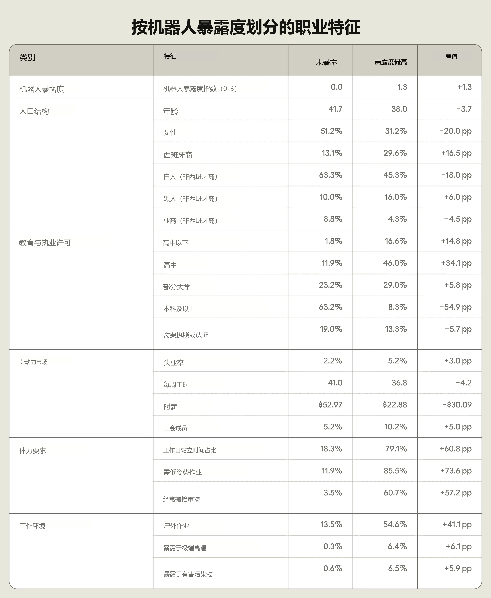
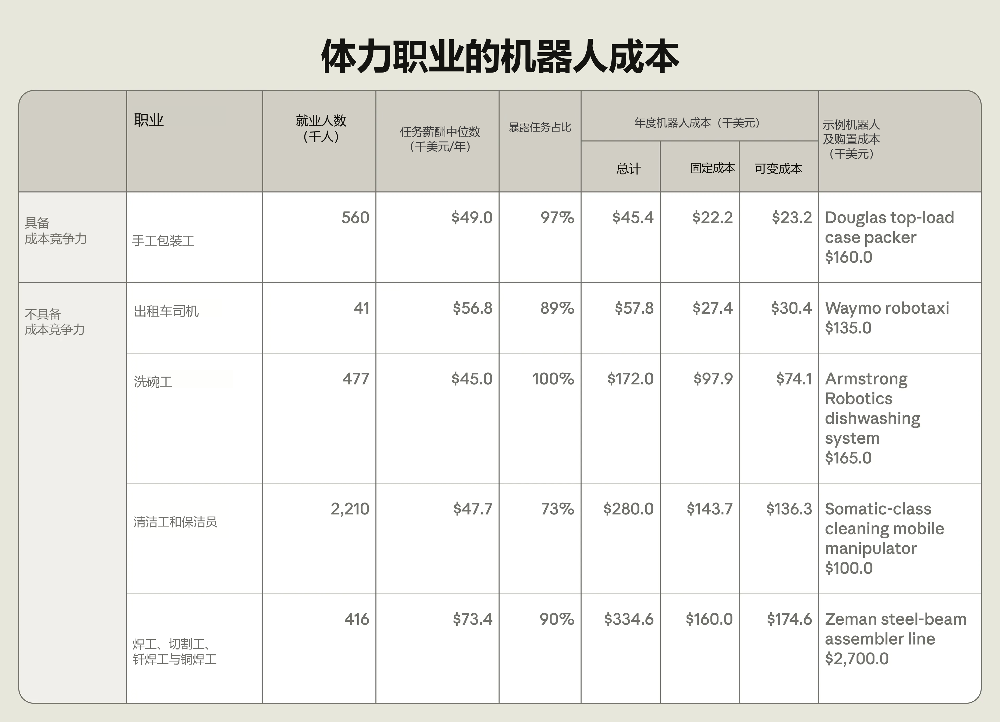
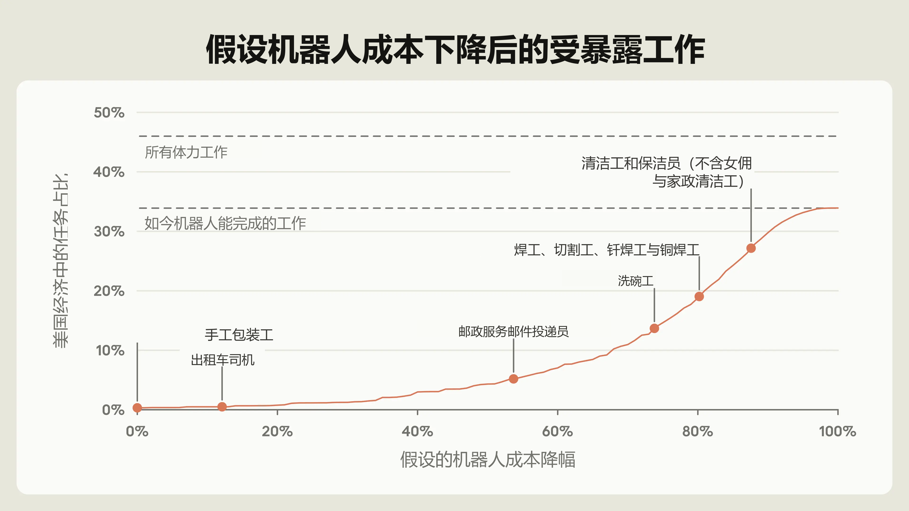
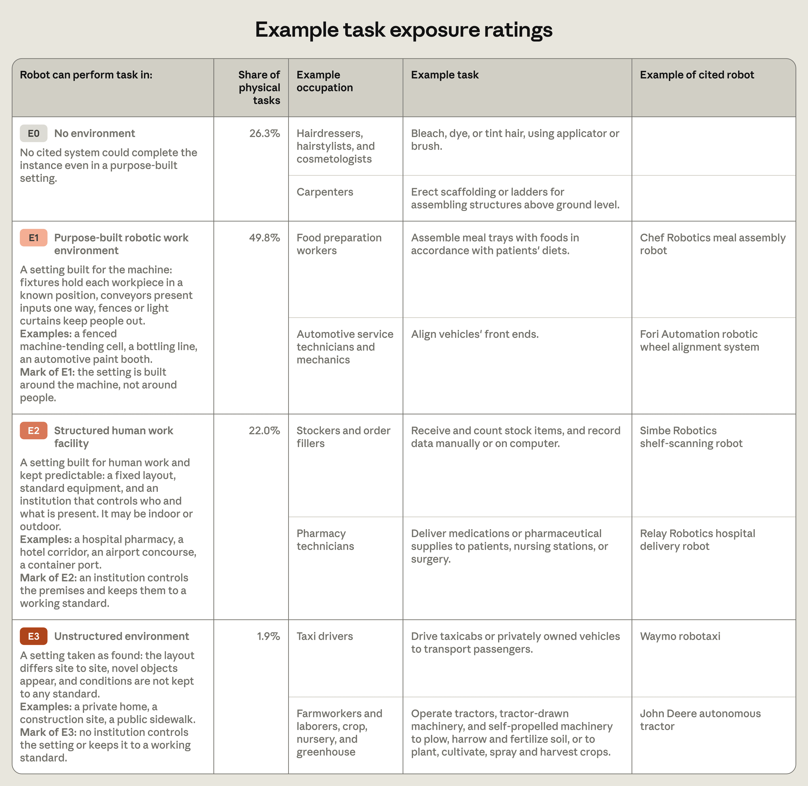
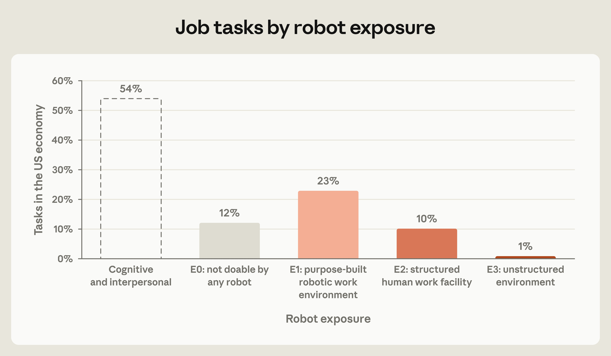
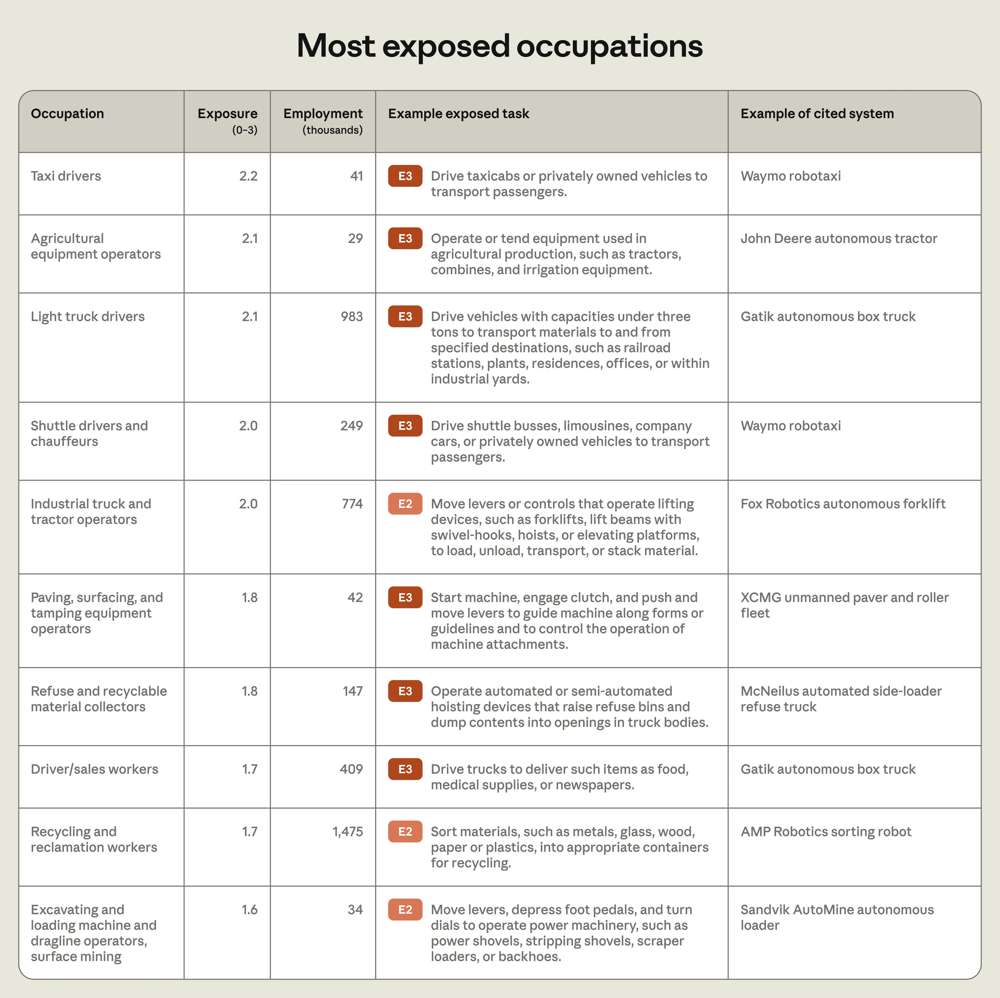
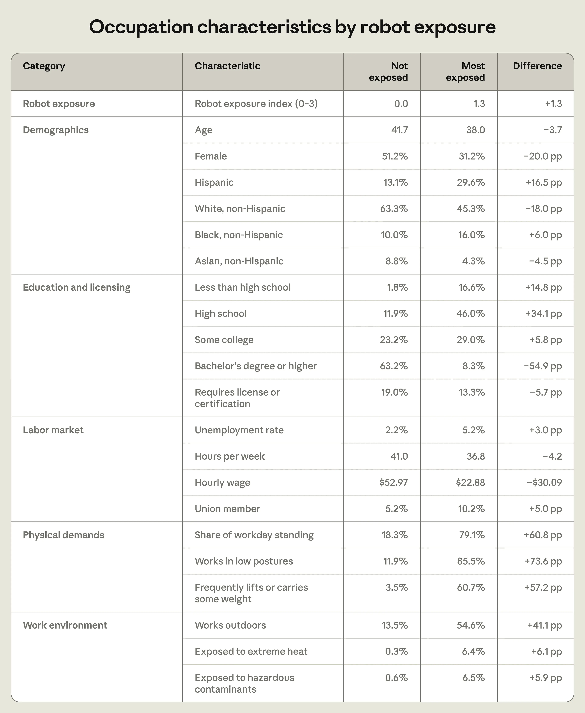
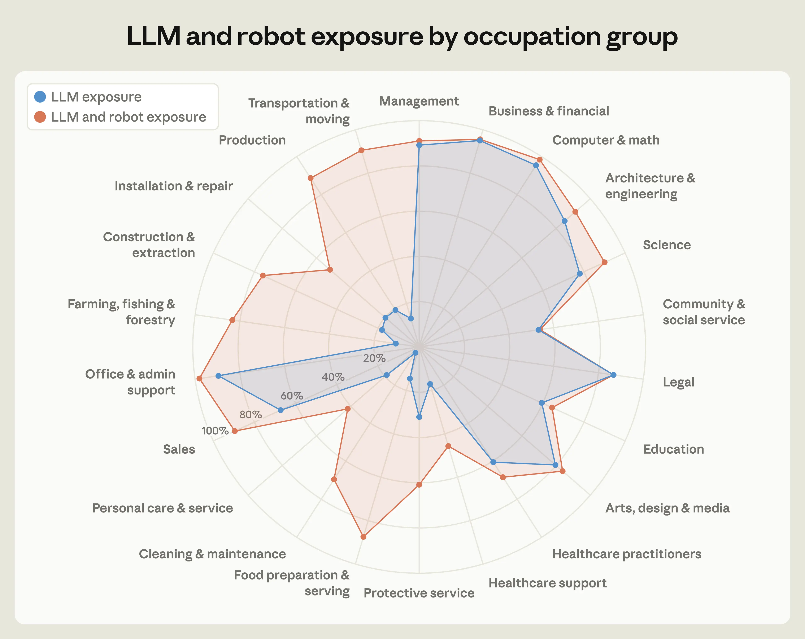
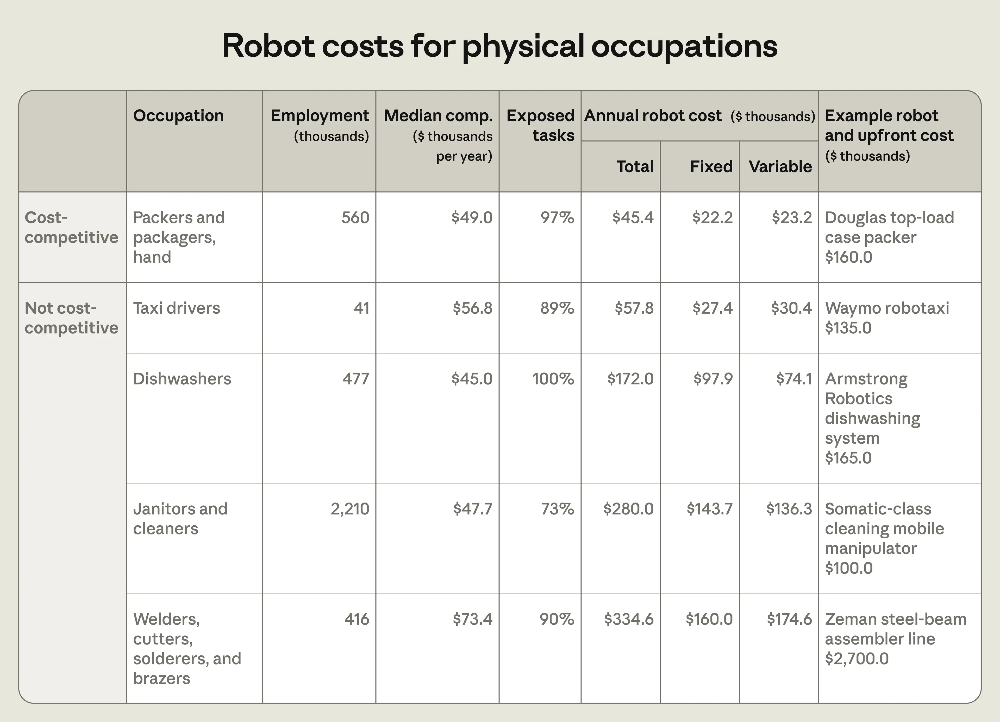
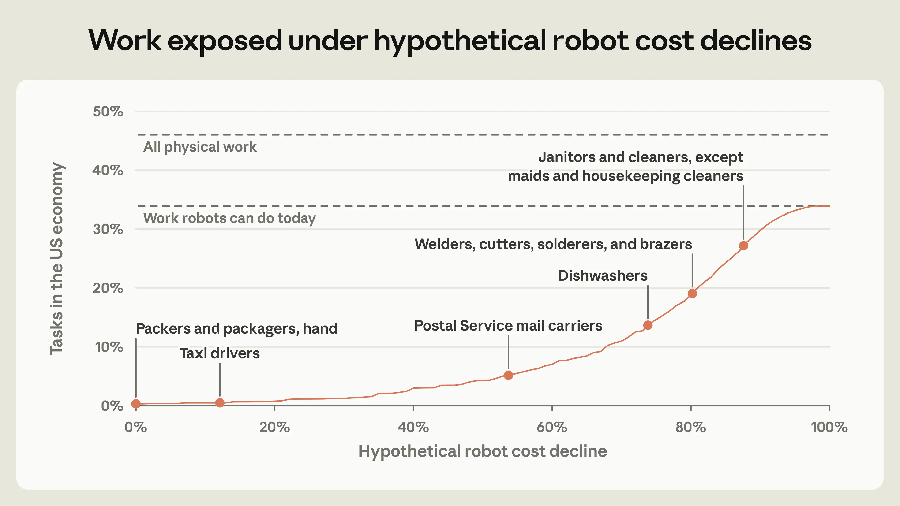

机器人能做什么工作？
📖 中文摘要
专业术语注解
机器人暴露度指数：按职业各任务能被机器人在何种环境完成、以工作时间加权的0-3分度量E0-E3分级：按机器人所需环境结构化程度递增的四级暴露度，从无法完成到非结构化环境成本竞争力：机器人完成某任务的年成本低于人类劳动者薪酬的状态O*NET：美国劳工部含约900个职业、约19,000条任务描述的数据库LLM暴露度：LLM能把所需时间减半的工作任务占比，用于与机器人暴露度对照📄 中文全文
- 类别： 经济研究（Economic Research）
- 来源： https://www.anthropic.com/research/what-work-can-robots-do
经济研究（Economic Research） 2026 年 9 月 30 日 下载 PDF 已发布 2026 年 9 月 30 日 作者
- Russell Legate-Yang
- Maxim Massenkoff
团队 经济学 主题
相关文章 * 经济研究 2026 年 8 月 12 日 审视劳动者再培训项目的证据
主要发现
- 我们提出了一个机器人暴露度指数，其依据是当前机器人完成工作任务的能力。
- 我们把机器人定义为能够感知并采取行动的自主物理机器；在美国，机器人可以完成四分之三的体力任务，占工作时间的34%，但大多局限于有限场景。受机器人影响的劳动者更可能是男性、受教育程度较低、薪酬较低。例如，驾驶和仓储类工作受现有机器人影响很大；护理和一般维修类工作则不然，因为即便在高度受控的环境中，现阶段的机器人也几乎无法完成它们的工作。
- 总体而言，按工作时间衡量，约80%的工作任务会受到机器人或LLM中至少一者的影响。机器人承担的是LLM无法完成的工作。剩下未受影响的工作高度依赖人际交往，或需要当今机器人尚不具备的体能技能。
- 尽管当今机器人可以完成大多数体力工作任务，但其成本远高于人力。机器人仅在0.3%的工作任务上具备成本竞争力。若机器人价格延续过去的下降趋势，这一比例要达到10%需要40年。除价格之外，能力、偏好与监管等因素也对机器人自动化构成进一步障碍。
- 过去50年间，受机器人影响更大的职业，其工资和就业降幅都超过其他职业。与此同时，职业暴露度也在上升：每一年，机器人都能新完成约2%原先无法完成的体力工作。
引言
大语言模型的进展让大规模工作自动化成为可能。但许多工作是体力性的。AI对经济的影响将部分取决于机器人技术。¹ 预测机器人技术进步的速度很难，但我们认为，列举当下的能力可以为了解未来数年提供线索。我们构建了一个职业对机器人暴露度的度量，用Claude评估当前机器人完成工作任务的能力。当机器人能在受控程度更低的环境中完成更多任务时，该职业的暴露度就更高。当机器人能以低于人类劳动者的成本完成同一任务时，它就具备成本竞争力。 我们发现，机器人已经可以完成美国74%的体力任务，占工作时间的34%。机器人与LLM合起来，影响了除五分之一之外的全部就业。 但我们也发现落地存在显著障碍：多数机器人需要高度结构化的环境，且仅在0.3%的工作上具备相对人力的成本竞争力。若机器人价格延续过去的下降趋势，这一比例要仅仅是达到10%就需要40年。成本之后的主要障碍是能力，例如解开缠绕电线所需的灵巧性。人类偏好与监管进一步限制了机器人在相当一部分任务上的应用。 我们的核心前提是：当机器人如今已经能在某些场景完成某职业的工作时，该职业更可能受到影响。跨越50年的回测验证了这一思路：从1977年至今，对当时已有机器人暴露度更高的职业，在随后数十年经历了工资与就业的下滑。 若以史为鉴，出租车司机和仓库包装工会比护士和机修工更早看到变化。我们预计，体力工作将首先在机器人如今已站稳脚跟的领域实现自动化。
当今与未来的机器人
如今大多数机器人在工厂等受控环境中运行。机器人通常需要经过编程才能与物理世界互动，而人类则能适应自己的工作环境。这一直是商用机器人落地的一大障碍。² 但AI帮助机器人解读并响应周围环境，使仓库机器人和自动驾驶车辆能够与人类并肩作业。³ 许多观察者预期AI会迅速提升机器人能力。⁴ 尽管机器人支出仍仅占美国设备投资总额的约1%，企业调查显示美国的机器人采用率可能在三年内接近翻倍。⁵ 各家企业正投入数十亿美元研发能比肩人类体能的AI驱动机器人。⁶ 很难准确预测这些努力将如何影响就业与生产率。按当前机器人任务覆盖率对职业进行_排序_，可以提示影响最先出现在哪里。机器人应当先影响它们现在已经能做的工作，再影响那些只有借助新技术、且在某些情况下还需监管配合才能完成的工作。当前能力也具体可测，而对未来能力的预测则必须押注哪些技术会胜出。⁷ 仍在研发中的机器人进一步支持我们聚焦当前暴露度：企业正在汽车工厂和仓库里测试人形机器人，而这些结构化环境本就是机器人已经普及的场所。⁸
衡量暴露度
我们的分析使用O*NET的数据，这是一个包含约900个职业、关联约19,000条工作任务描述的数据库。我们识别出一组我们认为没有机器人就无法自动化的体力工作任务。为此，我们让Claude按一套衡量体力、认知与人际工作要求的评分标准给任务描述打分。⁹ 「挖掘沟渠」这项任务是体力型的；「教舞蹈学生」也是，尽管它同时需要认知和人际技能。打字员用手「用加法机或计算器计算并核对报表、请购单或账单上的合计」，但这项任务不计入。附录A给出了细节，附录F列出了我们使用的提示词。 我们的任务级机器人暴露度度量提出的问题是：当今机器人能否完成这项任务？若能，在什么条件下？我们把机器人理解为能感知并采取行动的自主物理机器，这既包括扫描车辆以调整喷头的洗车机，也把完全由外科医生操控的遥操作手术机器排除在外。¹⁰ 我们按机器人完成任务所需的工作环境类型来划分暴露度等级。¹¹ 具体而言，我们按机器人能在何种场所完成每项任务，把任务分为暴露度递增的四个层级： * E0：机器人无法完成任务。 * E1：机器人能在专门建造的机器人作业环境（如工厂装配线）中完成任务。 * E2：机器人能在结构化的人类作业场所（如物流仓库）中完成任务。 * E3：机器人能在非结构化环境（如城市道路）中完成任务。
图 1 也展示了这一分级标准。
任务机器人暴露度分级标准
被判定为体力型的工作任务按此机器人暴露度分级标准评级。例如，在仓库从卡车上卸下箱子这一工作任务，若存在能完成该任务的仓库机器人，则评为E2。
我们认为环境控制度是衡量近期自动化风险的良好指标。由于机器人难以适应不可预测的环境，大多数已部署的机器人都在工程化环境中工作，例如装配线上给汽车喷漆的那些。虽然这些困难被认为在过去拖慢了体力自动化，但AI驱动的机器人或许能更好地适应环境。¹²
为判定暴露度，我们指示Claude搜索与每项任务相关的具体机器人，评估其能力与作业环境，并直接引用来源。我们会询问：在该任务典型作业环境的不同结构化程度版本中，机器人能否完成任务。让机器人完成看似简单的任务（如把餐具装进洗碗机）需要许多复杂的体能技能，因此只有已得到实证的机器人能力才算数。¹³ 机器人还必须在可靠性、出错率和速度等方面做得与人类相近。
例如，2010年代初的自动驾驶汽车还无法在真实道路上「驾驶出租车或私家车运送乘客」。但它们确实在为测试而建的模拟城镇里行驶，这是迈向如今自动驾驶车辆的一步。¹⁴ 按我们的评分标准，当时载客驾驶会被评为暴露度E1（机器人能在专门建造的机器人作业环境中完成任务），而今天则为E3（在非结构化环境中）。¹⁵
这套评分标准需要大量判断。ONET的任务表述往往十分简短，省略了那些对人来说容易、对机器人却很难的细节。¹⁶ 为了更具体地描述工作，我们引导Claude给出人们如今如何执行这些任务、以及这些情形出现频率的详细示例，再由Claude借助网络搜索评估机器人能力、为这些示例评定暴露度。被引用的来源必须展示机器人的实际部署、商业销售或演示；若剔除依赖演示的评级，结果也相近。任务暴露度按多数规则确定：以机器人在其中能完成至少一半任务示例（按时间加权）的最低结构化环境为准。¹⁷
以「挖掘沟渠」这项任务为例。我们先让Claude给出描述工人如今如何执行该任务及其频率的示例。例如，Claude估计有25%的时间这项任务需要「在开阔地面挖出一条直线沟渠」；另有20%的时间需要「在已有地下管道、管线、电缆和导管周围小心地手工挖掘」。这些活动需要不同种类的体能，前者依靠导航与力量（直线沟渠），后者依靠精细动作灵巧性与感知（在管道周围手工挖掘）。
Claude把第一个示例评为暴露度E3，引用的是一套可改装液压挖掘机、使其自主挖沟的控制系统。¹⁸ 当今机器人还无法在地下管道周围小心挖掘，因此后一个示例的暴露度为E0、不受影响。就「挖掘沟渠」而言，类似小心挖掘的示例多于直线挖沟，因此在我们的评级中这项任务整体不受影响。
图 2 给出了任务评级示例，并附上我们暴露度提示词中对各层级的完整描述，以及为每一评级提供佐证的机器人。我们还计算了各层级体力任务的占比：此处及全文，每项任务都按从事该任务的劳动者人数、以及他们花在该任务上的工作时间比例（由Claude估算）加权。¹⁹
 任务暴露度评级示例
任务暴露度评级示例
* 机器人暴露度层级如我们用于让Claude评定暴露度的提示词所述。暴露度针对7,594条被归类为体力型的工作任务评定。第2列的体力任务占比按某职业在每项任务上花费的时间比例（由Claude估算）以及该职业的就业人数（BLS，2025）对任务加权。例如，RelayRx机器人在医院里配送药品；医院是结构化的人类工作场所，因此「向患者、护理站或手术室配送药品或医药用品」这项任务被评为E2。按工作时间计，评为E2的任务占体力任务的22%。
机器人无法完成的任务（E0）约占估算工作时间的四分之一。这些任务需要机器人难以具备的体能技能，例如「用涂抹器或刷子给头发漂白、染色或上色」所需的精细动作灵巧性，以及「为在地面以上组装结构而搭设脚手架或梯子」所需的力量、平衡与移动能力。
机器人能在专门建造的环境中完成一半的体力任务，但在更广泛的场景中则不行（E1）。备餐机器人在传送带上打包即食餐，具备AI的新型号还能适应不同食材、份量和餐盘，因此「按患者饮食要求装配餐盘食物」这项任务被评为E1。
另有22%的体力任务可由机器人在结构化的人类工作场所完成（E2）。例如医院配送机器人能「向患者、护理站或手术室配送药品或医药用品」。当今机器人在非结构化环境中只能完成2%的体力任务（E3）。这些任务往往涉及驾驶，由自动驾驶汽车、拖拉机和其他车辆完成。²⁰
我们随附发布的数据包含Claude对所有已评级任务的推理过程与引用来源。例如，Claude把「在平焊、立焊或仰焊位置焊接构件」这项任务评为E1，并引用了一篇关于AI驱动焊接机器人的文章：「Path Robotics表示，其两款焊接单元都能自主焊接钢制部件，并已部署在美国和加拿大的制造车间。」²¹
我们为职业定义了一个机器人暴露度指数，把某职业各项任务的暴露度评级按0–3量表取平均。该指数随受影响任务占比及机器人在这些任务上的能力上升而升高，并按估算工作时间对任务加权。
理想的暴露度指数应当能完美预测未来数年的机器人自动化。既然我们无法预知未来，便改用职业与任务描述的历史数据来验证这一度量。我们评定自1977年以来若干年份的机器人暴露度，并把暴露度与工资、就业的变化关联起来。当某职业对机器人的暴露度更高时，即便考虑了行业趋势和其他潜在混杂因素，其后数十年的工资与就业仍会下降。附录B详述的这些结果，让我们对这一度量能够预测未来职业扰动抱有一定信心。
机器人能做什么工作？
图 3 汇总了美国经济中所有工作任务的机器人暴露度，按某职业在每项任务上花费时间的估算比例以及该职业的就业人数对任务加权。认知与人际工作占工作时间的54%。其余46%的任务是体力型的。占全部任务的比例中，约12%的任务当今任何机器人都无法完成（E0），23%可由机器人在专门建造的环境中完成（E1），10%在结构化的人类工作场所完成（E2），1%在非结构化环境中完成（E3）。若把任何暴露层级都算在内，74%的体力工作、即全部工作的34%，都能由机器人在某种条件下完成。
 按机器人暴露度划分的工作任务
按机器人暴露度划分的工作任务
全部工作任务都包含在内。任务按某职业在每项任务上花费的时间比例以及该职业的就业人数加权。机器人暴露度针对被判定为体力型的任务评定。例如，劳动者有23%的时间花在机器人能在专门建造环境中完成的任务上。各类别示例任务：授课、设计系统（认知与人际）；拘押人员、提供急救（E0）；配发药品、组装电子产品（E1）；清洁地面、搬运仓库货物（E2）；调控农田灌溉、从空中勘察地产，以及驾驶——机器人在非结构化环境中完成这些（E3）。就业数据来自BLS（2025），我们用Claude估算各职业在任务上的时间分配。
机器人能在经济的许多部门完成体力任务。自主移动仓库机器人驶向装卸平台并进入拖车内部，用吸盘抓取包裹并放上移动传送带。²² 由于这些机器人在结构化的人类工作场所中导航，许多仓储任务被评为E2，例如「用手或借助卡车、拖拉机及其他设备，将货物、库存或其他物料在仓储区、生产区、装卸平台、运输车辆、船舶或集装箱之间搬运」。导航与搬运方面的进展，使这类机器人在物流与运输领域变得常见。²³
图 4 按我们的机器人暴露度指数列出了暴露度最高的10个职业。这10个职业中有9个是车辆操作员。为驾驶类工作引用的机器人包括自动驾驶汽车、拖拉机、卡车和铺路机。出租车司机以2.2的指数居首。²⁴ 由于驾驶占了这份工作的大部分，按工作时间计的中位任务暴露度为E3，而诸如「为汽车内部吸尘清洁、清洗并抛光外部」这类辅助任务机器人也能完成，但需要在比开放道路更结构化的场景中。自动驾驶车辆尚未大规模颠覆驾驶类工作，但其能力表明这些职业比其他职业面临更高的自动化风险。²⁵
暴露度最高的职业
暴露度从0（没有任务能由机器人完成）到3（每项任务都能由机器人在非结构化环境中完成）不等。职业暴露度是任务暴露度的平均，按花在每项任务上的时间加权。每个职业都列出一项高暴露度任务以及能完成该任务的引用机器人。图中显示的是就业岗位至少20,000个的暴露度最高10个职业。例如，把班车司机和司机的任务暴露度取平均，得到3分制中的2.0分。Claude引用Waymo自动驾驶车辆作为能完成其部分任务的机器人。BLS（2025）的就业数据有时会把数个O*NET职业名称合并；我们把其就业人数均分，回收与再利用工人即是如此。任务时间需求由Claude估算。
一个职业可以涵盖许多工作场景。在美国，机器人可能只能在其中部分场景运行，而国外的机器人有时能覆盖全部场景。例如，上货员和订单配货员在零售店和仓库里都要完成「用新到或调拨的商品补充货架、货架格、货箱、料箱和货台」这项任务。在美国仓库中，带触觉传感器的AI驱动机器人拣取并存放商品。²⁶ 在美国零售业，移动机器人会扫描空货架，但必须提醒人类来补货。²⁷ 日本便利店的机器人则能自行给冰箱补货。²⁸ 由于上货机器人需要把商品送到近旁，这项任务被评为E1。我们估计上货员有70%的时间花在像这样的E1级任务上，另有16%花在E2级任务上。总体而言，他们的机器人暴露度指数为1.0。
一个职业只要有许多任务处于中等暴露度，或某些最耗时的任务处于高暴露度，就可能受机器人影响。试比较抹灰工（完成石膏板收尾，暴露度指数1.6）与回收与再利用工人（分拣回收物，暴露度指数1.7）。
抹灰工的任务在不受影响与高度受影响之间分化。砌筑室内隔墙的工人用纸带和一种叫「泥」的膏料抹平石膏板上的接缝、接头和螺钉。泥和纸带都是容易弄脏的材料，因此机器人无法完成「把纸带压在接缝上，使其嵌入密封胶并封住接缝」这项任务。第一层纸带涂层干透后，工人「再涂附加层以填补孔洞并使表面平整」。这项任务被评为E3：一种自主石膏板机器人用AI扫描墙面、喷涂附加密封层，并在干燥后打磨墙面。²⁹ 总体而言，按工作时间计，抹灰工41%的任务暴露度为E3，而另有26%的任务机器人无法完成。
相比之下，对回收与再利用工人，机器人能按工作时间完成超过四分之三的任务，评级为E2；只有8%的工作时间不受影响。例如，带计算机视觉和吸盘夹具的机器人能完成「把金属、玻璃、木材、纸张或塑料等材料分拣进相应的回收容器」这项任务。³⁰ 这些机器人替代了从传送带上拣选回收物的工人，因此这项及其他任务被评为E2。
机器人对抹灰工的特定任务能力很强，而对回收工人的暴露面更广，但机器人适应性更弱。抹灰工那些脏乱的任务可能成为自动化的瓶颈。也可能是大型回收设施较早采用机器人，而较小设施较晚采用。无论哪种情况，若广泛部署，机器人似乎都可能改变这两类工作。
受影响职业的特征
确立了暴露度度量之后，我们现在考虑这种暴露度对劳动力市场可能意味着什么。 图 5 把机器人暴露度指数处于最高五分位的劳动者，与占另外约20%岗位的完全未受影响劳动者作比较。2020–2024年美国社区调查的数据显示，高度受影响的劳动者为女性的可能性低20个百分点，为西班牙裔的可能性高16个百分点。这些劳动者拥有本科及以上学历的可能性低55个百分点，时薪约低30美元，失业率则高出两倍多。³¹ 美国劳工统计局汇编的职业要求统计也显示，受机器人影响的职业更可能需要搬运重物、在极端高温或危险污染物附近作业。这种暴露模式在许多方面与LLM通常呈现的模式相反。³²

**按机器人暴露度划分的职业特征 __暴露度最高的劳动者指机器人暴露度指数处于最高五分位的人群；未受影响的劳动者暴露度为零，约占另外20%的岗位。人口结构、教育与劳动力市场数据来自2020–2024年美国社区调查，工会成员比例与执业许可除外。工会成员比例来自Hirsch et al.（2026）为2020–2024年当前人口调查汇总的统计。执业许可来自2025年BLS职业要求调查，体力需求与工作环境变量亦然（部分职业来自2023年调查）。各项统计均按就业人数加权。
机器人与LLM暴露度
接下来我们分析，机器人是否会把职业扰动风险扩大到仅由LLM带来的范围之外。借鉴Eloundou et al.（2024）以及Massenkoff and McCrory（2026），我们比较两种职业暴露度度量： * LLM暴露度：LLM能把所需时间减半的工作任务占比（在我们此前的研究中称为理论能力）。 * LLM与机器人暴露度：受LLM或机器人中至少一者影响的工作任务占比，对每项任务取LLM暴露度与E1+机器人暴露度中的较高者。
机器人与LLM暴露度评级衡量的概念略有不同，但都表明技术可以完成某项任务的大部分。虽然把LLM与机器人整合进真实岗位可能带来新挑战或催生新能力，但这两种度量能基于当今能力，对职业暴露度提供初步认识。
图 6 按宽泛职业类别分组，绘出仅对LLM（蓝色）以及对LLM与机器人（橙色）的职业暴露度。机器人比单靠LLM影响更多、也更多种类的职业。交通运输与搬运类任务中，仅受LLM影响的比例不到15%，而把机器人计入后约90%受影响。类似地，机器人把办公室与行政支持类职业（主要涉及电脑工作和轻度体力任务）的暴露度抬高到接近100%。总体而言，约一半的工作仅受LLM影响，但把机器人考虑在内后升至81%。
 按职业组划分的LLM与机器人暴露度
按职业组划分的LLM与机器人暴露度
LLM暴露度是Eloundou et al.（2024）中评定为受影响的任务占比（𝛽为正）。职业对LLM与机器人的暴露度，再加上机器人暴露度评为E1或更高的任务。职业组按2位SOC代码划分，组内平均按任务时间占比与就业人数加权。例如在保护性服务职业中，31%的工作任务受LLM影响，61%受LLM或机器人影响。就业数据来自BLS（2025）。任务时间占比由Claude估算。
当今LLM和机器人不能做什么工作？以个人护理与服务类职业为例，其约40%的任务受影响。面对面的社会互动与和人的身体接触，对LLM和机器人都是难项，却对这些职业很重要。这一例子提示，高度人际化的工作，或需要精细操作的工作，或许较不易在近期被自动化。³³ 安装与维修、医疗支持、社区与社会服务等职业组也符合这一模式，暴露度相对较低。虽然LLM和机器人如今无法完成这些任务，但没有任何职业组整体暴露度低于40%。而技术进步随时间推移可能让新型自动化成为可能。
未受影响的任务也有助于描述是什么让工作难以自动化。我们把文本相近的未受影响任务表述归组，让Claude加以描述（附录C.1）。当今未受LLM或机器人影响的任务，往往是动手且面对面的，有时还受监管约束。医疗类任务常兼具这些特征，例如「给患者用药并监测患者有无反应或副作用」。
在附录C.2中，我们研究哪些障碍最可能阻碍体力任务的自动化。我们让Claude判断：若得不到解决，当今哪些障碍会阻止机器人完成每项体力任务的相当一部分（无论该任务是否受影响）。我们把这些归为四类：能力、人类偏好、监管与成本。对受能力限制的任务，我们让Claude从操作、规划与推理、移动与力量、感知中挑出最关键的缺失技能。
我们发现，能力与成本是机器人落地的最大障碍。能力阻碍了约70%体力任务的采用。操作能力尤为突出：除非机器人更擅长触摸和搬动物体，否则一半的体力任务无法大规模自动化。规划与推理技能的不足（AI似乎最有可能改进这类技能）限制了8%体力任务的机器人自动化。对几乎所有任务而言，成本也需要下降。
我们的估算表明，当今的监管不允许机器人完成14%的体力任务。监管对医疗、保护性服务与教育类任务关系重大，但对食品制备、清洁、生产、建筑、维修和物料搬运类任务影响较小，而后者约占体力工作的一半。人类偏好在四分之一的任务上拖住了机器人。这可能是因为人们不会信任机器人（去「给儿童穿衣、换尿布」），或因为他们看重社会互动（去「迎接宾客、引座，并递上菜单和酒单」）。
如果机器人能力快速发展，这些结果意味着什么？约30%的体力任务受偏好或监管所限。这意味着，若机器人变得既有能力又具成本效益，大多数体力工作都将受影响，不过其余部分可能成为薄弱环节，拖累总体生产率提速。能力进展不均也可能放缓采用，比如机器人变聪明了却仍无法像人类一样搬动物体。话说回来，更好的机器人也可能减少对自动化的抵触，例如缓解安全顾虑。接下来我们转向这些估算中最常见的障碍——机器人成本。
机器人成本与采用
尽管机器人如今能完成大多数体力工作，让它们这样做未必划算。由昂贵硬件制成的机器人，不像软件或LLM那样容易复制和分发。与只评估能力、不考虑成本的LLM暴露度度量相比，区分那些受具备成本竞争力的机器人影响的职业就尤为重要。³⁴ 对每一项受影响的任务，我们依据任务暴露度度量中引用的具体机器人，估算机器人完成该任务的年度成本。我们让Claude借助网络搜索以及为每项任务引用的机器人清单来估算成本。自动化一项E1级暴露任务可能需要重新设计工作场所以适配机器人，而完成E3级任务的机器人可能要用昂贵传感器在非结构化环境中导航。 估算涵盖为完成每项任务而部署一台机器人的全部成本。³⁵ 为使机器人成本与人力成本可比，我们先让Claude估算一名人类劳动者一年在某一任务上的典型产出。例如，「擀、揉、切或整形面团」的面包师一年约产出180,000个成形面块。随后Claude估算机器人产出同样数量需要多少成本。由于面包师在不同环境中完成这项任务，Claude会对零售、中等规模和工业面包房的机器人部署成本取平均。固定成本按硬件寿命与资金时间价值折算为年值。 按此计算，机器人完成一项任务的成本便可与劳动者薪酬比较。若某任务的机器人成本低于其人力成本（按该职业来自BLS的总薪酬乘以花在这项任务上的时间比例计算），我们就说该任务受具备成本竞争力的机器人影响。³⁶ 标准经济模型预测这类任务会被自动化，不过考虑到采用摩擦与成本不确定性，这一度量更多是提示性的。³⁷ 详见附录D.1中关于机器人任务成本的说明与一个演算示例。 机器人常承担多项工作任务，但我们按职业中的单项任务估算成本。简单把各任务成本相加，可能会重复计入机器人，或低估实际部署中的协调成本。我们按职业汇总：把各任务成本估算提供给Claude，请它给出扣除冗余与新增项后的总成本。若这一机器人总成本低于按机器人可完成任务的时间占比缩放后的总薪酬，我们就说该职业受具备成本竞争力的机器人影响。³⁸ 图 7 列出五种高度体力型的职业，以及机器人完成其受影响任务的成本估算。包装工与打包工是受具备成本竞争力的机器人影响的最大职业。完成包装工与打包工的任务需要若干种机器人，包括装箱、在仓库内搬运物料、视觉检视货物、撑起纸箱、打印并贴标、以及封箱的机器人。³⁹ 据估算，这些机器人的采购与安装成本超过200万美元，但可替代约14名劳动者一年的工作。固定成本按约10年使用寿命、8%的资本成本分摊。维护、兼职人工监督与能源等运营支出，使替代一名人类劳动者一年的年成本达到约45,000美元。由于包装工与打包工有97%的时间花在机器人能完成的任务上，而其成本约49,000美元，机器人完成这些工作每年约便宜2,500美元。

体力型职业的机器人成本就业与总薪酬使用BLS数据（OEWS 2025、ECEC 2026）。受影响任务指该职业暴露度为E1–E3的任务占比，按花在每项任务上的估算时间加权。Claude估算各职业机器人完成受影响任务的年成本。成本包括年化固定成本与可变成本。最后一列列出每项成本估算所含的一种机器人及其估算采购价。 美国目前约有560,000名包装工与打包工。企业面临采用摩擦，如监管或借贷限制，且这些成本估算只是近似值。例如，机器人出租车据估算只比出租车司机贵约7,000美元，却面临监管障碍。⁴⁰ 话虽如此，对具备成本竞争力的机器人能完成的体力工作，自动化风险可能更高。自2015年以来，包装工与打包工的就业人数已下降22%。BLS预计，到2035年该职业减少的岗位数将在所有职业中排第11位，仅次于惩教人员和9类销售与办公室职业。⁴¹ 对图 7 中其余职业，尽管机器人能完成其中大部分工作，其成本仍远高于人类。在金属加工领域，带摄像头和AI的机器人能自主焊接。⁴² 但人类焊工要完成许多为焊接做铺垫的任务，例如摆放大型金属部件、爬梯子焊接难以够到的接头、检查质量、以及打磨和修整材料。要让这些工作自动化，所需机器人合计成本约为人类焊工的五倍。 洗碗工以及门卫和清洁工，薪酬比焊工低25,000至30,000美元。但其机器人对应物仍要贵上数倍。清洁工作难以标准化和流水线化，清洁机器人往往比人类慢，且只能完成特定任务。⁴³ 图 8 通过绘出机器人成本在假设统一下降时对具备成本竞争力的机器人的暴露度，汇总了机器人成本。例如，若当今机器人成本下降20%，它们就能在280万名劳动者所承担的体力工作上具备成本竞争力。这些劳动者平均有42%的时间花在受机器人影响的工作上，占经济中全部工作时间的0.8%。作为参照，行业与政府数据显示，自1990年代以来机器人价格每年约下降3%。按这一速度，约需七年才能达到20%的成本降幅。附录E更详细地讨论了历史机器人价格数据。 尽管机器人理论上能完成合计占全部工作时间34%的任务，但当今它们仅在0.3%的任务上具备成本竞争力。不过，这仍包括约300,000名劳动者——机器人能完成其95%的任务。⁴⁴ 正如图 7 所示，当今机器人在包装工与打包工、出租车司机上已具备或接近成本竞争力，但对大多数其他职业仍相去甚远。 要让机器人在当今10%的人类工作上具备成本竞争力，成本需下降约70%。按每年下降3%计算，约需40年。话说回来，像人形机器人这类能力更强的新机器人，或新的制造工艺，也可能压低成本以实现人类工作自动化。有报告指出，若对人形机器人及其他机器人需求旺盛，全球产量可能迅速扩张。⁴⁵

假设机器人成本下降时暴露的工作通过比较机器人与人力成本计算得出。人力成本为花在受影响任务上的时间比例乘以职业总薪酬。给定机器人成本降幅，曲线绘出机器人成本低于人力的全部工作任务占比。任务按估算时间需求与职业就业人数加权。机器人与人力成本在劳动者薪酬分布的六个分位点上进行比较；详见附录D.2。部分职业在其机器人成本低于中位人力成本处标出。例如，机器人能完成邮政服务邮递员94%的任务。要达到劳动者一年的产出，用机器人需花费166,000美元。邮政服务邮递员的总薪酬中位数为82,000美元，因此若成本下降54%，机器人便具备成本竞争力（166,000美元×46%<82,000美元×94%）。总薪酬用BLS数据（OEWS 2025、ECEC 2026）计算。 人与机器人之间的成本持平，也未必意味着高失业或快速经济增长。劳动者仍在完成的任务可能成为瓶颈，而且这些机器人成本估算往往包含人工监督、异常处理或维修工作。正如Acemoglu and Restrepo（2019）以及Jones and Tonetti（2026）所强调的，自动化只有在机器比人类便宜得多时才会提升生产率，而非在成本持平之时。 我们把这些成本估算用于两项扩展。附录D.2计算了另一种职业暴露度度量，同时计入机器人能做什么以及能以多低的成本做到。把成本纳入考量后，得到的职业排序与我们以能力为主的主度量非常相近（秩相关0.95）。 附录E还给出了若干程式化情景，描述若机器人变得更便宜、更高产时的采用情况。这些情景借鉴1990年代以来工业机器人的创新与采用历程，以及分析师对人形机器人的预测。我们固定任务与工资，询问历史成本下降与能力提升的速度要多快才能让机器人具备成本竞争力。 为建模机器人如何随时间承担新工作，我们用当今机器人评定1977年工作任务的暴露度，并与1977年当时的机器人暴露度对比。1977年，机器人无法完成62%的体力任务。当今机器人已能完成这些任务中除24%之外的全部。随时间推移，这意味着每一年机器人都能新完成约2%原先无法完成的任务（见附录B.4）。 再加上每年3%的成本下降，直到2085年，机器人在当今一半的体力工作上仍不具备成本竞争力。但机器人技术的快速进展可能加快这些时间表。在快速采用情景下，若质量调整后成本下降速度最高快至四倍、且机器人承担新任务的速度快一倍，机器人到2050年就能在一半的体力工作上具备成本竞争力。要把当今90%的体力工作自动化，仍需53年。 有一点需要提醒：我们的情景对每项任务施加相同的成本降幅或能力提升，因此任务是在当今「成本相对劳动者薪酬」的排序下达到成本竞争力的。这一排序捕捉了广泛的经济激励，但机器人公司也可能出于其他原因优先攻克某些能力。例如，人形机器人的演示有时展示家务，而机器人制造商可能优先做对自身运营有用的工厂工作，就像AI公司优先做编码智能体一样。⁴⁶ 总体而言，机器人需要在未来数十年持续保持创纪录的价格下降与质量改进速度，才可能实现快速的体力自动化。即便如此，这些成本预测下的就业影响仍更不确定，因为它们把偏好与监管等力量、以及工资下降等反馈效应搁置一旁。
讨论
我们提出了一个新的职业对机器人暴露度的度量。当机器人能完成某职业的任务时，该职业就受影响。像人类一样工作的机器人，比那些需要改造工作场所的机器人（如工厂机器人）对暴露度的贡献更大。 我们发现，由于自动驾驶车辆，驾驶类工作暴露度最高。当今大多数机器人并不像无人驾驶汽车，只在受控环境中运行。但机器人能以某种身份完成大多数体力工作，尽管在相同工作上其成本比人类高出数倍。受机器人影响的职业与受LLM影响的职业颇为不同：薪酬更低，体力要求更高。 我们希望这些度量有助于在AI拓展机器人能力之际分析体力自动化。当今的暴露度模式，可以提示能力更强的机器人明天会扰动哪些职业。而对这项工作的定期更新，可以追踪机器人能力的变化。 我们的暴露度量表基于这样一个理念：当今天的机器人已经在某些场景从事某职业的工作时，该职业风险更高。我们发现，这种评估机器人的方式能预测历史上的劳动力市场影响。但AI驱动的机器人可能跃过我们的量表，完成它们如今做不到的工作，例如学会爬梯子，或更灵巧地运用手臂和夹具。 关于机器人与AI可能如何重塑经济，仍有许多不确定之处。对AI的增长预测常假定：物理瓶颈（机器人或许能缓解）会拖累认知工作自动化带来的收益。我们也未考虑AI如何在没有机器人的情况下影响体力工作，例如更准确地预测工厂机器何时需要维护。较近期的，追踪AI影响的努力可以关注司机、仓库包装工等受影响职业，寻找扰动的早期迹象。更长远看，一个关键问题是工作本身将如何变化——随着机器人与AI进步，它或许会变得更社交、更人际化。
附录
可在此处获取。
数据可用性
本报告的数据可在此处获取。
参考文献
Abraham, Katharine G. and James R. Spletzer, "Are the New Jobs Good Jobs?," in Katharine G. Abraham, James R. Spletzer, and Michael J. Harper, eds., Labor in the New Economy , University of Chicago Press, 2010, 101-143. Acemoglu, Daron and David Autor, "Skills, Tasks and Technologies: Implications for Employment and Earnings," in Handbook of Labor Economics , Vol. 4B, Elsevier, 2011, 1043-1171. Acemoglu, Daron, David Autor, David Dorn, Gordon H. Hanson, and Brendan Price, "Import Competition and the Great US Employment Sag of the 2000s," Journal of Labor Economics , 2016, 34 (S1), S141-S198. Acemoglu, Daron, Andrea Manera, and Pascual Restrepo, "Does the US Tax Code Favor Automation?," Brookings Papers on Economic Activity , Spring 2020, 231-300. Acemoglu, Daron and Pascual Restrepo, "The Race between Man and Machine: Implications of Technology for Growth, Factor Shares, and Employment," American Economic Review , 2018, 108 (6), 1488-1542. Acemoglu, Daron and Pascual Restrepo, "Automation and New Tasks: How Technology Displaces and Reinstates Labor," Journal of Economic Perspectives , 2019, 33 (2), 3-30. Acemoglu, Daron and Pascual Restrepo, "Robots and Jobs: Evidence from US Labor Markets," Journal of Political Economy , 2020, 128 (6), 2188-2244. Acemoglu, Daron and Pascual Restrepo, "Tasks, Automation, and the Rise in U.S. Wage Inequality," Econometrica , 2022, 90 (5), 1973-2016. Agaskar, Ameya, Sriram Siva, William Pickering, Kyle O'Brien, Charles Kekeh, Alexandre Ormiga Galvao Barbosa, Ang Li, Brianna Gallo Sarker, Alicia Chua, Mayur Nemade, Charun Thattai, Jiaming Di, Isaac Iyengar, Ramya Dharoor, Dino Kirouani, Jimmy Erskine, Tamir Hegazy, Scott Niekum, Usman A. Khan, Federico Pecora, and Joseph W. Durham, "DeepFleet: Multi-Agent Foundation Models for Mobile Robots," arXiv:2508.08574, 2025. Aghion, Philippe, Benjamin F. Jones, and Charles I. Jones, "Artificial Intelligence and Economic Growth," in Ajay Agrawal, Joshua Gans, and Avi Goldfarb, eds., The Economics of Artificial Intelligence: An Agenda , University of Chicago Press, 2019, 237-282. Airbus, "Airbus Concludes ATTOL with Fully Autonomous Flight Tests," press release, June 29, 2020. https://www.airbus.com/en/newsroom/press-releases/2020-06-airbus-concludes-attol-with-fully-autonomous-flight-tests Airbus, "Airbus Tests New Technologies to Enhance Pilot Assistance," press release, January 12, 2023. https://www.airbus.com/en/newsroom/press-releases/2023-01-airbus-tests-new-technologies-to-enhance-pilot-assistance Amazon, "Introducing Vulcan: Amazon's First Robot with a Sense of Touch," About Amazon, May 7, 2025. https://www.aboutamazon.com/news/operations/amazon-vulcan-robot-pick-stow-touch Andreassen, Dag, "A Robotic Success from Jæren," The Norwegian Museum of Science and Technology, September 3, 2024. https://www.tekniskmuseum.no/en/stories/a-robotic-success-from-the-fighter Andrychowicz, Marcin, Bowen Baker, Maciek Chociej, Rafal Józefowicz, Bob McGrew, Jakub Pachocki, Arthur Petron, Matthias Plappert, Glenn Powell, Alex Ray, Jonas Schneider, Szymon Sidor, Josh Tobin, Peter Welinder, Lilian Weng, and Wojciech Zaremba, "Learning Dexterous In-Hand Manipulation," International Journal of Robotics Research , 2020, 39 (1), 3-20. Arantes, Ana P., Nadja Bressan, Ludymila R. Borges, and Chris A. McGibbon, "Evaluation of a Novel Real-Time Adaptive Assist-as-Needed Controller for Robot-Assisted Upper Extremity Rehabilitation Following Stroke," PLOS ONE , 2023, 18 (10), e0292627. Atalay, Enghin, Phai Phongthiengtham, Sebastian Sotelo, and Daniel Tannenbaum, "The Evolution of Work in the United States," American Economic Journal: Applied Economics , 2020, 12 (2), 1-34. Autor, David H., "Why Are There Still So Many Jobs? The History and Future of Workplace Automation," Journal of Economic Perspectives , 2015, 29 (3), 3-30. Autor, David, Caroline Chin, Anna Salomons, and Bryan Seegmiller, "New Frontiers: The Origins and Content of New Work, 1940-2018," Quarterly Journal of Economics , 2024, 139 (3), 1399-1465. Autor, David H. and David Dorn, "The Growth of Low-Skill Service Jobs and the Polarization of the US Labor Market," American Economic Review , 2013, 103 (5), 1553-1597. Autor, David H., David Dorn, and Gordon H. Hanson, "The China Syndrome: Local Labor Market Effects of Import Competition in the United States," American Economic Review , 2013, 103 (6), 2121-2168. Autor, David H., Lawrence F. Katz, and Alan B. Krueger, "Computing Inequality: Have Computers Changed the Labor Market?," Quarterly Journal of Economics , 1998, 113 (4), 1169-1213. Autor, David H., Frank Levy, and Richard J. Murnane, "The Skill Content of Recent Technological Change: An Empirical Exploration," Quarterly Journal of Economics , 2003, 118 (4), 1279-1333. Autor, David, David Mindell, and Elisabeth Reynolds, "The Work of the Future: Building Better Jobs in an Age of Intelligent Machines," MIT Task Force on the Work of the Future, 2020. Autor, David H. and Neil Thompson, "Expertise," Journal of the European Economic Association , 2025, 23 (4), 1203-1271. Badger Technologies, "Badger Technologies and Stop & Shop Stores Upgrade Marty the Robot at 300+ Locations to Improve Customer Shopping Experiences," press release, September 18, 2023. https://www.badger-technologies.com/news/press-releases/stop-and-shop-upgrade-marty-the-robot.html Bank of America, "Humanoid Robots 101," BofA Global Research, April 29, 2025. Bank of Japan, "Producer Price Index, 2020 Base: Robots [PRCG20_2201350029]," Time-Series Data Search, 2026. https://www.stat-search.boj.or.jp/ Baptista, Eduardo, Ju-min Park, and Laurie Chen, "Robots Poised for 'ChatGPT Moment,' Unitree CEO Says," Reuters, August 20, 2026. https://www.reuters.com/world/asia-pacific/robots-poised-chatgpt-moment-unitree-ceo-says-2026-08-20/ Billard, Aude and Danica Kragic, "Trends and Challenges in Robot Manipulation," Science , 2019, 364 (6446), eaat8414. Binder, Damon, "AGI Will Set Off an Industrial Explosion," AI Frontiers , August 11, 2026. https://ai-frontiers.org/articles/agi-will-set-off-an-industrial-explosion Bishop, Todd, "Amazon Tops 1 Million Robots: Here's What They Do," GeekWire , July 1, 2025. https://www.geekwire.com/2025/amazons-robot-workforce-hits-1-million-heres-what-they-all-do/ BMW Group, "BMW Group Advances the Use of Physical AI in Production with Figure 03 Project in Spartanburg," press release, June 25, 2026. https://www.press.bmwgroup.com/global/article/detail/T0458778EN/bmw-group-advances-the-use-of-physical-ai-in-production-with-figure-03-project-in-spartanburg?language=en Boston Consulting Group, "The Robotics Revolution: The Next Great Leap in Manufacturing," report, September 2015. https://www.bcg.com/publications/2015/lean-manufacturing-innovation-robotics-revolution-next-great-leap-manufacturing Boston Dynamics, "Stretch," product page, 2026. https://bostondynamics.com/products/stretch/ Brooks, Rodney, "Why Today's Humanoids Won't Learn Dexterity," rodneybrooks.com, September 26, 2025. https://rodneybrooks.com/why-todays-humanoids-wont-learn-dexterity/ Built Robotics, "The World's First Fully Autonomous Trenching Solution," Exosystem product page, 2026. https://www.builtrobotics.com/solutions/trenching Canvas, "Drywall Finishing Robot," product page, JLG Industries, 2026. https://www.jlg.com/en/canvas Cazzaniga, Mauro, Florence Jaumotte, Longji Li, Giovanni Melina, Augustus J. Panton, Carlo Pizzinelli, Emma J. Rockall, and Marina Mendes Tavares, "Gen-AI: Artificial Intelligence and the Future of Work," IMF Staff Discussion Note SDN/2024/001, 2024. Chaparro-Rico, Betsy D. M., Daniele Cafolla, Paolo Tortola, and Giuseppe Galardi, "Assessing Stiffness, Joint Torque and ROM for Paretic and Non-Paretic Lower Limbs during the Subacute Phase of Stroke Using Lokomat Tools," Applied Sciences , 2020, 10 (18), 6168. Chen, Jiafeng and Jonathan Roth, "Logs with Zeros? Some Problems and Solutions," Quarterly Journal of Economics , 2024, 139 (2), 891-936. Cleveland Clinic, "da Vinci Robotic Surgery," Health Library, last updated April 29, 2025. https://my.clevelandclinic.org/health/treatments/16908-da-vinci-surgery Cockburn, Iain M., Rebecca Henderson, and Scott Stern, "The Impact of Artificial Intelligence on Innovation: An Exploratory Analysis," in Ajay Agrawal, Joshua Gans, and Avi Goldfarb, eds., The Economics of Artificial Intelligence: An Agenda , University of Chicago Press, 2019, 115-146. Code of Federal Regulations, "Composition of Flight Crew," 14 CFR 121.385, retrieved September 21, 2026. https://www.ecfr.gov/current/title-14/section-121.385 CORDIS, "Automated System for Packaging Fresh Meat with Reduced Waste/Giveaway, Processing Time, Human Involvement and Contamination (AUTOMEATIC)," European Commission, grant agreement 775913, periodic reporting summary, 2018. https://cordis.europa.eu/project/id/775913 Counterpoint Research, "Global Humanoid Robot Shipments Soar Nearly 300% YoY in H1 2026, Driven by Commercial Deployments," August 20, 2026. https://counterpointresearch.com/en/insights/global-humanoid-robot-shipments-soar-nearly-300-percent-yoy-in-h1-2026 Davidson, Tom and Rose Hadshar, "The Industrial Explosion," Forethought Research, May 2025. https://www.forethought.org/research/the-industrial-explosion Davidson, Tom, Basil Halperin, Thomas Houlden, and Anton Korinek, "When Does Automating Research Produce Explosive Growth?," EconTAI Working Paper, January 2026. https://www.econtai.org/research/AutomatingAIResearch.pdf Deming, David J., "The Growing Importance of Social Skills in the Labor Market," Quarterly Journal of Economics , 2017, 132 (4), 1593-1640. Denain, Jean-Stanislas and Yann Rivière, "How Fast Could Robot Production Scale Up?," Epoch AI, April 2026. https://epoch.ai/publications/how-fast-could-robot-production-scale-up Drankhan, Holly, "Developments in Robotic Teat Sprayers Cut Costs and Labor," Progressive Dairy , September 30, 2016. https://www.agproud.com/articles/28362-developments-in-robotic-teat-sprayers-cut-costs-and-labor Dürr Group, "See and Drive Perfectly with x-light and x-wheel," duerrmore magazine, November 13, 2018. https://www.durr-group.com/en/duerrmore/2019/autonomous-driving/x-light-and-x-wheel Eloundou, Tyna, Sam Manning, Pamela Mishkin, and Daniel Rock, "GPTs are GPTs: Labor Market Impact Potential of LLMs," Science , 2024, 384 (6702), 1306-1308. Epiroc, "Autonomous Material Handling: A Crucial Step Toward the Mine of the Future," customer story, April 17, 2024. https://www.epiroc.com/en-me/customer-stories/2024/autonomous-material-handling-a-crucial-step-toward-the-mine-of-the-future Ewing, Jack, "Robots That Walk and Talk Are Coming to Car Factories," The New York Times , August 11, 2026. https://www.nytimes.com/2026/08/11/business/humanoid-robots-car-factories.html Fabrico, "Maintenance Cost as Percent of RAV: The Benchmark That Cuts Through Excuses," blog, June 26, 2026. https://www.fabrico.io/blog/maintenance-cost-as-percent-of-rav/ Federal Aviation Administration (FAA), "Safety Framework for Aircraft Automation," September 2025. https://www.faa.gov/aircraft/air_cert/step/safety_framework_aircraft_automation Fine, Sidney A., "A Structure of Worker Functions," Personnel and Guidance Journal , 1955, 34 (2), 66-73. Fine, Sidney A. and Wretha W. Wiley, An Introduction to Functional Job Analysis , Kalamazoo, MI: W.E. Upjohn Institute for Employment Research, 1971. Firoozi, Roya, Johnathan Tucker, Stephen Tian, Anirudha Majumdar, Jiankai Sun, Weiyu Liu, Yuke Zhu, Shuran Song, Ashish Kapoor, Karol Hausman, Brian Ichter, Danny Driess, Jiajun Wu, Cewu Lu, and Mac Schwager, "Foundation Models in Robotics: Applications, Challenges, and the Future," International Journal of Robotics Research , 2025, 44 (5), 701-739. Fori Automation, "Toe Tool Systems," product page, 2025. https://foriauto.com/our-products/end-of-line/alignment-systems/wheel-alignment-systems/toe-tool-systems Frey, Carl Benedikt and Michael A. Osborne, "The Future of Employment: How Susceptible Are Jobs to Computerisation?," Technological Forecasting and Social Change , 2017, 114, 254-280. Friedel, William C., Jr., Thomas S. Bettencourt, and Daniel L. Freeman, "Tomato Harvesting Employing Electronic Sorting," U.S. Patent 4,033,099, issued July 5, 1977. https://patents.google.com/patent/US4033099A/en Friedel, William C., Jr. and Charles F. Dietz, "Tomato Harvesting Sorting System," U.S. Patent 4,118,311, issued October 3, 1978. https://patents.google.com/patent/US4118311A/en Goldman, Sharon, "A Year Ago, Nvidia's Jensen Huang Said the 'ChatGPT Moment' for Robotics Was Around the Corner. Now He Says It's 'Nearly Here.' But Is It?," Fortune , January 6, 2026. https://fortune.com/2026/01/06/nvidia-jensen-huang-chatgpt-moment-for-robotics/ González Huarte, Javier, Maite Ortiz de Zarate, and Aitor Ibarguren, "CAD-Based Robot Programming Solution for Wire Harness Manufacturing in Aeronautic Sector," Robotics , 2023, 12 (5), 130. Graetz, Georg and Guy Michaels, "Robots at Work," Review of Economics and Statistics , 2018, 100 (5), 753-768. Gridwise, "How Are Robotaxis Affecting Driver Pay in AV Cities?," blog, August 2025. https://gridwise.io/blog/how-are-robotaxis-affecting-driver-pay-in-av-cities Hirsch, Barry T., David A. Macpherson, and William E. Even, "Union Membership, Coverage, and Earnings from the CPS" [dataset], Unionstats.com, 2026. https://unionstats.com/ Honerkamp, Paxton, "Within Uber-Waymo Split, a Key Labor Battle over AVs Is Being Waged in the Nation's Capital," CNBC, August 1, 2026. https://www.cnbc.com/2026/08/01/uber-waymo-autonomous-vehicle-regulation.html Huffman, Wallace E., "The Status of Labor-Saving Mechanization in U.S. Fruit and Vegetable Harvesting," Choices , 2012, 27 (2). https://www.choicesmagazine.org/choices-magazine/theme-articles/immigration-and-agriculture/the-status-of-labor-saving-mechanization-in-us-fruit-and-vegetable-harvesting Humlum, Anders, "Robot Adoption and Labor Market Dynamics," Rockwool Foundation Research Unit Study Paper 175, 2021. Hwang, Jyh-Jing, Runsheng Xu, Hubert Lin, Wei-Chih Hung, Jingwei Ji, Kristy Choi, Di Huang, Tong He, Paul Covington, Benjamin Sapp, Yin Zhou, James Guo, Dragomir Anguelov, and Mingxing Tan, "EMMA: End-to-End Multimodal Model for Autonomous Driving," Transactions on Machine Learning Research , 2025. Ibarz, Julian, Jie Tan, Chelsea Finn, Mrinal Kalakrishnan, Peter Pastor, and Sergey Levine, "How to Train Your Robot with Deep Reinforcement Learning: Lessons We Have Learned," International Journal of Robotics Research , 2021, 40 (4-5), 698-721. Ingenia, "Fruit-Picking Robots," Issue 93, December 2022. https://www.ingenia.org.uk/articles/fruit-picking-robots/ International Organization for Standardization (ISO), "Robotics — Vocabulary," ISO 8373:2021, Geneva, 2021. Jarrett, Cosette, "12 Cool Facts About the AI-Powered Robots That Help Deliver Your Amazon Packages," About Amazon, December 11, 2023. https://www.aboutamazon.com/news/operations/amazon-robotics-cool-facts Jones, Charles I. and Christopher Tonetti, "Past Automation and Future A.I.: How Weak Links Tame the Growth Explosion," working paper, Stanford University, 2026. https://web.stanford.edu/~chadj/JonesTonetti_Automation.pdf Jurkat, Anne, Rainer Klump, and Florian Schneider, "Tracking the Rise of Robots: A Survey of the IFR Database and its Applications," MPRA Paper 111812, Munich Personal RePEc Archive, October 2021. https://mpra.ub.uni-muenchen.de/111812/ Katz, Lawrence F. and Kevin M. Murphy, "Changes in Relative Wages, 1963-1987: Supply and Demand Factors," Quarterly Journal of Economics , 1992, 107 (1), 35-78. Kawasaki Robotics, "At the Forefront of FRP Automation: Spray-Up and Cutting Process Innovations Pioneered by KADO × IEC," case study, 2026. https://kawasakirobotics.com/case-studies/at-the-forefront-of-frp-automation-spray-up-and-cutting-process-innovations-pioneered-by-kado-x-iec/ Kemp, Charles C., Aaron Edsinger, and Eduardo Torres-Jara, "Challenges for Robot Manipulation in Human Environments," IEEE Robotics & Automation Magazine, 2007, 14 (1), 20-29. Kim, Moo Jin, Karl Pertsch, Siddharth Karamcheti, Ted Xiao, Ashwin Balakrishna, Suraj Nair, Rafael Rafailov, Ethan P. Foster, Pannag R. Sanketi, Quan Vuong, Thomas Kollar, Benjamin Burchfiel, Russ Tedrake, Dorsa Sadigh, Sergey Levine, Percy Liang, and Chelsea Finn, "OpenVLA: An Open-Source Vision-Language-Action Model," in Proceedings of the 8th Conference on Robot Learning (CoRL 2024) , Proceedings of Machine Learning Research, 2025, 270, 2679-2713. Kober, Jens, J. Andrew Bagnell, and Jan Peters, "Reinforcement Learning in Robotics: A Survey," International Journal of Robotics Research , 2013, 32 (11), 1238-1274. Kogan, Leonid, Dimitris Papanikolaou, Lawrence D. W. Schmidt, and Bryan Seegmiller, "Technology and Labor Displacement: Evidence from Linking Patents with Worker-Level Data," NBER Working Paper 31846, 2023. Kroemer, Oliver, Scott Niekum, and George Konidaris, "A Review of Robot Learning for Manipulation: Challenges, Representations, and Algorithms," Journal of Machine Learning Research , 2021, 22 (30), 1-82. Link, Albert N., Zachary T. Oliver, and Alan C. O'Connor, "Economic Analysis of Technology Infrastructure Needs for Advanced Manufacturing: Advanced Robotics and Automation," NIST GCR 16-005, National Institute of Standards and Technology, August 2016. https://doi.org/10.6028/NIST.GCR.16-005 Lise, Jeremy and Fabien Postel-Vinay, "Multidimensional Skills, Sorting, and Human Capital Accumulation," American Economic Review , 2020, 110 (8), 2328-2376. Ludwig, Jens, Sendhil Mullainathan, and Ashesh Rambachan, "Large Language Models: An Applied Econometric Framework," NBER Working Paper 33344, 2025. Lung, Natalie, "New York's Robotaxi Plan Pulled in Setback to Waymo Expansion," Bloomberg News, February 19, 2026. https://www.bloomberg.com/news/articles/2026-02-19/new-york-s-robotaxi-plan-pulled-in-setback-to-waymo-expansion Madrigal, Alexis C., "Inside Waymo's Secret World for Training Self-Driving Cars," The Atlantic , August 23, 2017. https://www.theatlantic.com/technology/archive/2017/08/inside-waymos-secret-testing-and-simulation-facilities/537648/ Mason, Matthew T., "Toward Robotic Manipulation," Annual Review of Control, Robotics, and Autonomous Systems , 2018, 1, 1-28. Massenkoff, Maxim and Peter McCrory, "Labor Market Impacts of AI: A New Measure and Early Evidence," Anthropic, March 5, 2026. https://www.anthropic.com/research/labor-market-impacts Mayekawa, "Deboning Machines," product page, 2026a. https://mayekawa.com/products/deboning_machines/ Mayekawa, "Reducing Workloads with Reliable Deboning Technology and Stabilizing Production to Meet Market Demands for Pork," With Mayekawa, 2026b (undated; retrieved September 29, 2026). https://mayekawa.com/with/stories/hamdas/ McKinsey & Company, "The Future of Robotics: Intelligent, Adaptable, and on Your Team," The Next Normal, 2026. https://www.mckinsey.com/featured-insights/the-next-normal/robotics Metzger, Jean-Claude, Olivier Lambercy, Antonella Califfi, Daria Dinacci, Claudio Petrillo, Paolo Rossi, Fabio M. Conti, and Roger Gassert, "Assessment-Driven Selection and Adaptation of Exercise Difficulty in Robot-Assisted Therapy: A Pilot Study with a Hand Rehabilitation Robot," Journal of NeuroEngineering and Rehabilitation , 2014, 11, 154. Moravec, Hans, Mind Children: The Future of Robot and Human Intelligence , Cambridge, MA: Harvard University Press, 1988. Morgan Stanley, "Humanoid Robot Market Expected to Reach $5 Trillion by 2050," May 14, 2025. https://www.morganstanley.com/insights/articles/humanoid-robot-market-5-trillion-by-2050 Morgan Stanley Research, "Humanoids: Investment Implications of Embodied AI," report, June 26, 2024. Navas-Reascos, Gabriel E., David Romero, Johan Stahre, and Alberto Caballero-Ruiz, "Wire Harness Assembly Process Supported by Collaborative Robots: Literature Review and Call for R&D," Robotics , 2022, 11 (3), 65. Nissyoku Shimbun, "前川製作所が豚もも肉脱骨ロボット「ハムダス」発売" [Mayekawa Launches HAMDAS Pork Ham Deboning Robot], Nihon Shokuryo Shimbun , September 14, 1998. https://news.nissyoku.co.jp/news/nss-8423-0032 Oitzman, Mike, "Pharm Robotics Advances Automated Dairy Cow Healthcare," The Robot Report , July 13, 2025. https://www.therobotreport.com/pharm-robotics-advances-automated-dairy-cow-healthcare/ Oxmaint, "Food Manufacturing Maintenance Budgeting: Planning, Benchmarks, and Cost Control," March 28, 2026. https://oxmaint.com/industries/food-manufacturing/food-manufacturing-maintenance-budgeting-benchmarks-cost-control Pallottino, Lucia, "Robotics for Warehouses and Logistics: Technologies, Challenges, and Future Directions," Annual Review of Control, Robotics, and Autonomous Systems , 2026, 9, 377-401. Polanyi, Michael, The Tacit Dimension , Garden City, NY: Doubleday, 1966. Pumacay, Wilbert, Ishika Singh, Jiafei Duan, Ranjay Krishna, Jesse Thomason, and Dieter Fox, "THE COLOSSEUM: A Benchmark for Evaluating Generalization for Robotic Manipulation," arXiv:2402.08191, 2024. Reuters, "Meet SwagBot, the AI-Powered Robot Cattle Herder Preventing Soil Degradation," Rappler, December 12, 2024. https://www.rappler.com/technology/innovations/swagbot-artificial-intelligence-powered-robot-cattle-herder/ Rivière, Yann and Jean-Stanislas Denain, "Where Autonomy Works: Evaluating Robot Capabilities in 2026," Epoch AI, 2026. https://epoch.ai/publications/where-autonomy-works-evaluating-robot-capabilities-in-2026 Robbins, Jacob, "Apptronik Raises $520M as VC Funding for Humanoid Robotics Explodes 300%," PitchBook News, February 11, 2026. https://pitchbook.com/news/articles/apptronik-raises-520m-as-vc-funding-for-humanoid-robotics-explodes-300 The Robot Report, "Path Robotics Raises $100M to Automate Welding," October 28, 2024. https://www.therobotreport.com/path-robotics-raises-100m-to-automate-welding/ The Robot Report, "Okibo Opens New Jersey HQ and Launches EG7 Robot in U.S. Market," April 11, 2025. https://www.therobotreport.com/okibo-opens-new-jersey-hq-and-launches-eg7-robot-in-u-s-market/ Rosen, C. A., "Machine Vision and Robotics: Industrial Requirements," in George G. Dodd and Lothar Rossol, eds., Computer Vision and Sensor-Based Robots , Springer, 1979, 3-22. SAE International, "Taxonomy and Definitions for Terms Related to Driving Automation Systems for On-Road Motor Vehicles," SAE Recommended Practice J3016_202104, April 2021. Sandvik, "Sandvik Introduces AutoMine AutoLoad 2.0 for Improved Autonomous Bucket Loading," press release, June 14, 2023. https://www.mining.sandvik/en/news-and-media/news-archive/2023/06/sandvik-introduces-automine-autoload-2.0-for-improved-autonomous-bucket-loading Schenck RoTec, "Wheel Assembly Lines: Individual & Complete Solutions," product page, 2025. https://www.schenck-rotec.com/en-us/product/wheel-assembly-lines/ Scoop, "‘Golden Opportunity’ for Scott Technology with Silver Fern Farms," Scott Technology announcement, September 14, 2022. https://www.scoop.co.nz/stories/BU2209/S00201/golden-opportunity-for-scott-technology-with-silver-fern-farms.htm Simbe Robotics, "Tally," product page, 2026. https://www.simberobotics.com/store-intelligence/tally Statista, "Average Retail Electricity Price for Industrial Consumers in the United States from 1970 to 2025," April 28, 2026. https://www.statista.com/statistics/190680/us-industrial-consumer-price-estimates-for-retail-electricity-since-1970/ Suresh, Sudharshan, Haozhi Qi, Tingfan Wu, Taosha Fan, Luis Pineda, Mike Lambeta, Jitendra Malik, Mrinal Kalakrishnan, Roberto Calandra, Michael Kaess, Joseph Ortiz, and Mustafa Mukadam, "NeuralFeels with Neural Fields: Visuotactile Perception for In-Hand Manipulation," Science Robotics , 2024, 9 (96), eadl0628. Svanberg, Maja, Wensu Li, Martin Fleming, Brian Goehring, and Neil Thompson, "Beyond AI Exposure: Which Tasks Are Cost-Effective to Automate with Computer Vision?," MIT FutureTech working paper, January 2024. https://futuretech.mit.edu/publication/beyond-ai-exposure-which-tasks-are-cost-effective-to-automate-with-computer-vision Tamkin, Alex, Miles McCain, Kunal Handa, Esin Durmus, Liane Lovitt, Ankur Rathi, Saffron Huang, Alfred Mountfield, Jerry Hong, Stuart Ritchie, Michael Stern, Brian Clarke, Landon Goldberg, Theodore R. Sumers, Jared Mueller, William McEachen, Wes Mitchell, Shan Carter, Jack Clark, Jared Kaplan, and Deep Ganguli, "Clio: Privacy-Preserving Insights into Real-World AI Use," arXiv:2412.13678, 2024. Tamkin, Alex and Peter McCrory, "Estimating AI Productivity Gains from Claude Conversations," Anthropic, 2025. https://www.anthropic.com/research/estimating-productivity-gains Tedrake, Russ, Robotic Manipulation: Perception, Planning, and Control , course notes for MIT 6.421, 2026. http://manipulation.mit.edu Telexistence, "Telexistence to Begin Installing AI Robot 'TX SCARA' in 300 FamilyMart Stores," press release, August 10, 2022. https://tx-inc.com/en/blog/2022/08/10/11737/ Thomas, Charlotte, "Rise of the Robots," METSTRADE, October 23, 2023. https://www.metstrade.com/news/superyacht/rise-of-the-robots Trammell, Philip and Anton Korinek, "Economic Growth Under Transformative AI," Annual Review of Economics , 2026, 18, 589-611. Transformation Hub Wiring Harness, "Robotics Challenge 2026," 2026. https://www.leitungssatz-hub.de/en/robotik-challenge/robotik-challenge-2026/ UBS, "Is the World Ready for 1bn Robots?," UBS Global Research Q-Series, June 17, 2025. University of Michigan, "U-M Opens Mcity Test Environment for Connected and Driverless Vehicles," Michigan Engineering News, July 20, 2015. https://news.engin.umich.edu/2015/07/u-m-opens-mcity-test-environment-for-connected-and-driverless-vehicles/ U.S. Bureau of Economic Analysis (BEA), "Price Indexes for Private Fixed Investment in Equipment by Type: Computers and Peripheral Equipment [B935RG3A086NBEA]," NIPA Table 5.5.4, retrieved from FRED, Federal Reserve Bank of St. Louis, 2026. https://fred.stlouisfed.org/series/B935RG3A086NBEA U.S. Bureau of Labor Statistics (BLS), "A New Methodology for Estimating Hours Worked for U.S. Labor Productivity Measurement," Office of Productivity and Technology technical note, November 3, 2022. https://www.bls.gov/productivity/technical-notes/labor-productivity-hours-worked-method-using-ces-all-employee-hours-nov-2022.htm U.S. Bureau of Labor Statistics (BLS), "Occupational Employment and Wage Statistics (OEWS): May 2025 National Occupational Employment and Wage Estimates," 2025. https://www.bls.gov/oes/tables.htm U.S. Bureau of Labor Statistics (BLS), "Consumer Price Index for All Urban Consumers: New Vehicles, U.S. City Average, Not Seasonally Adjusted [CUUR0000SETA01]," 2026a. https://www.bls.gov/cpi/ U.S. Bureau of Labor Statistics (BLS), "Employment Level - Agriculture and Related Industries [LNS12034560] and Employment Level [CE16OV]," Current Population Survey, retrieved from FRED, Federal Reserve Bank of St. Louis, 2026b. https://fred.stlouisfed.org/series/LNS12034560 U.S. Bureau of Labor Statistics (BLS), "Occupational Employment and Wage Statistics: Frequently Asked Questions," 2026c, retrieved September 21, 2026. https://www.bls.gov/oes/oes_ques.htm U.S. Census Bureau, "Annual Capital Expenditures Survey: Robotic Equipment Expenditures, 2019-2022," 2024. https://www.census.gov/programs-surveys/aces.html U.S. Department of Transportation Office of Inspector General, "Enhanced FAA Oversight Could Reduce Hazards Associated with Increased Use of Flight Deck Automation," Audit Report AV-2016-013, January 7, 2016. https://www.oig.dot.gov/sites/default/files/FAA%20Flight%20Decek%20Automation_Final%20Report%5E1-7-16.pdf Vitiello, V., K.-W. Kwok, and G.-Z. Yang, "Introduction to Robot-Assisted Minimally Invasive Surgery (MIS)," in Paula Gomes, ed., Medical Robotics: Minimally Invasive Surgery , Woodhead Publishing, 2012, 1-40. Wallace, Neal, "Butcher Bot Pays Off in Dollars per Carcase," Farmers Weekly (New Zealand), September 30, 2022. https://www.farmersweekly.co.nz/technology/butcher-bot-pays-off-in-dollars-per-carcase/ Wallace, Neal, "One Giant LEAP for Robo Meatworks," Farmers Weekly (New Zealand), April 22, 2024. https://www.farmersweekly.co.nz/technology/one-giant-leap-for-robo-meatworks/ Wang, Hanchen, Tianfan Fu, Yuanqi Du, Wenhao Gao, Kexin Huang, Ziming Liu, Payal Chandak, Shengchao Liu, Peter Van Katwyk, Andreea Deac, Anima Anandkumar, Karianne Bergen, Carla P. Gomes, Shirley Ho, Pushmeet Kohli, Joan Lasenby, Jure Leskovec, Tie-Yan Liu, Arjun Manrai, Debora Marks, Bharath Ramsundar, Le Song, Jimeng Sun, Jian Tang, Petar Veličković, Max Welling, Linfeng Zhang, Connor W. Coley, Yoshua Bengio, and Marinka Zitnik, "Scientific Discovery in the Age of Artificial Intelligence," Nature , 2023, 620, 47-60. Waste360, "Q&A: AMP's Matanya Horowitz on Bringing AI to the Recycling World and How the Tech Is Advancing," November 2023. https://www.waste360.com/waste-recycling/q-a-amp-s-matanya-horowitz-on-bringing-ai-to-the-recycling-and-how-the-tech-is-advancing WATTAgNet, "The New Generation of Automated Deboning Machines," October 1, 2018. https://www.wattagnet.com/broilers-turkeys/processing-slaughter/article/15526256/the-new-generation-of-automated-deboning-machines-wattagnet Webb, Michael, "The Impact of Artificial Intelligence on the Labor Market," working paper, Stanford University, 2020. Wessling, Brianna, "With New Funding, Monumental Plans to Bring Its Construction Robots to the U.S.," The Robot Report , July 17, 2026. https://www.therobotreport.com/with-new-funding-monumental-plans-bring-construction-robots-u-s/ Wishart-Smith, Heather, "Built Robotics Unveils Autonomous Pile Driving Robot, Expediting Solar Rollout," Forbes , March 20, 2023. https://www.forbes.com/sites/heatherwishartsmith/2023/03/20/built-robotics-unveils-autonomous-pile-driving-robot-expediting-solar-rollout/ Yotzov, Ivan, Jose Maria Barrero, Nicholas Bloom, Philip Bunn, Steven J. Davis, Kevin M. Foster, Aaron Jalca, Brent H. Meyer, Paul Mizen, Michael A. Navarrete, Pawel Smietanka, Gregory Thwaites, and Ben Zhe Wang, "Firm Data on AI," NBER Working Paper 34836, 2026. https://doi.org/10.3386/w34836 Yu, Zhen, Jingyu Wang, Ting Zuo, James Alm, Xun Li, and Xue Li, "Robotaxis Reduce Taxi Drivers' Income," Humanities and Social Sciences Communications , 2026, 13, article 629. Zeira, Joseph, "Workers, Machines, and Economic Growth," Quarterly Journal of Economics , 1998, 113 (4), 1091-1117. Ziemerink, Jan, "How to Manage Automatic Calf Feeders Successfully," Förster-Technik North America presentation, Vita Plus, 2018. https://www.vitaplus.com/wp-content/uploads/2018/06/Successfull-Calfraising_with-Auto-feeders2018_2.pdf
数据来源
Althobaiti, Shahad, Ahmad Alabdulkareem, Judy Hanwen Shen, Iyad Rahwan, Morgan Frank, Esteban Moro, and Alex Rutherford. "Dictionary of Titles" [dataset]. Harvard Dataverse, 2022. https://doi.org/10.7910/DVN/DQW8IP Autor, David, Caroline Chin, Anna Salomons, and Bryan Seegmiller. Replication Data for: "New Frontiers: The Origins and Content of New Work, 1940-2018." Harvard Dataverse, V1.1, 2024. https://doi.org/10.7910/DVN/7RYD2E, retrieved July 30-31, 2026. Autor, David H. and David Dorn. 2013. "The Growth of Low-Skill Service Jobs and the Polarization of the US Labor Market." American Economic Review 103 (5): 1553-1597. Occupation crosswalks (occ1990dd) and offshorability measure: https://www.ddorn.net/data.htm. Bank of Japan. Producer Price Index, 2020 Base: Robots [PRCG20_2201350029]. Time-Series Data Search, retrieved September 16, 2026. https://www.stat-search.boj.or.jp/ Eloundou, Tyna, Sam Manning, Pamela Mishkin, and Daniel Rock. 2024. "GPTs are GPTs: Labor Market Impact Potential of LLMs." Science 384 (6702): 1306-1308. Task-level exposure labels: https://github.com/openai/GPTs-are-GPTs. Hirsch, Barry T., David A. Macpherson, and William E. Even. Union Membership, Coverage, and Earnings from the CPS [dataset]. Unionstats.com, 2026. https://unionstats.com/. Described in Hirsch, Barry T. and David A. Macpherson. 2003. "Union Membership and Coverage Database from the Current Population Survey: Note." Industrial and Labor Relations Review 56 (2): 349-354. National Academy of Sciences, Committee on Occupational Classification and Analysis. Dictionary of Occupational Titles (DOT): Part I - Current Population Survey, April 1971, Augmented With DOT Characteristics, and Part II - Fourth Edition Dictionary of DOT Scores for 1970 Census Categories. Ann Arbor, MI: Inter-university Consortium for Political and Social Research [distributor], 2006-09-06. https://doi.org/10.3886/ICPSR07845.v2 National Center for ONET Development. ONET Database, versions 29.3 (2025), 13.0 (2008), and 4.0 (2002); the ONET-SOC taxonomy crosswalks; and the DOT to ONET-SOC 2019 Crosswalk. Washington, DC: U.S. Department of Labor, Employment and Training Administration. https://www.onetcenter.org/database.html; https://www.onetcenter.org/taxonomy.html; https://www.onetcenter.org/crosswalks/dot/ Ruggles, Steven, Sarah Flood, Matthew Sobek, Daniel Backman, Grace Cooper, Julia A. Rivera Drew, Stephanie Richards, Renae Rodgers, Jonathan Schroeder, and Kari C.W. Williams. IPUMS USA: Version 16.0 [dataset]. Minneapolis, MN: IPUMS, 2025. https://doi.org/10.18128/D010.V16.0 U.S. Bureau of Economic Analysis (BEA). Personal Consumption Expenditures: Chain-type Price Index [PCEPI], retrieved from FRED, Federal Reserve Bank of St. Louis. https://fred.stlouisfed.org/series/PCEPI, September 21, 2026. U.S. Bureau of Economic Analysis (BEA). Table 5.5.4. Price Indexes for Private Fixed Investment in Equipment by Type: Computers and peripheral equipment [B935RG3A086NBEA], retrieved from FRED, Federal Reserve Bank of St. Louis. https://fred.stlouisfed.org/series/B935RG3A086NBEA, September 16, 2026. U.S. Bureau of Labor Statistics (BLS). Consumer Price Index for All Urban Consumers, U.S. city average, not seasonally adjusted: New vehicles [CUUR0000SETA01]. Washington, DC: U.S. Department of Labor. Retrieved September 16, 2026. https://www.bls.gov/cpi/ U.S. Bureau of Labor Statistics (BLS). Employer Costs for Employee Compensation (ECEC), 2004-2023 and March 2026. Washington, DC: U.S. Department of Labor. https://www.bls.gov/ecec/ U.S. Bureau of Labor Statistics (BLS). Employment Projections, 2025-35: Table 1.6, Occupations with the Largest Job Declines. Washington, DC: U.S. Department of Labor, August 27, 2026. https://www.bls.gov/emp/tables/occupations-largest-job-declines.htm U.S. Bureau of Labor Statistics (BLS). Occupational Employment and Wage Statistics (OEWS): 2002, May 2008, May 2015, and May 2025 National Occupational Employment and Wage Estimates. Washington, DC: U.S. Department of Labor. https://www.bls.gov/oes/tables.htm U.S. Bureau of Labor Statistics (BLS). Occupational Requirements Survey (ORS), 2023 and 2025. Washington, DC: U.S. Department of Labor. https://www.bls.gov/ors/ U.S. Census Bureau. 2018 Census Occupation Code List with Crosswalk, and 2018 ACS PUMS and 2018 SIPP Public-Use Occupation Code List [datasets], 2018. https://www2.census.gov/programs-surveys/demo/guidance/industry-occupation/2018-occupation-code-list-and-crosswalk.xlsx; https://www2.census.gov/programs-surveys/demo/guidance/industry-occupation/2018-ACS-PUMS-and-2018-SIPP-Public-Use-Occupation-Code-List.xlsx U.S. Census Bureau. Annual Capital Expenditures Survey: Capital Expenditures for Structures and Equipment, Tables 1a and 1b, 2019-2022 releases. https://www.census.gov/data/tables/2022/econ/aces/2022-aces-summary.html U.S. Department of Labor, Employment and Training Administration. Dictionary of Occupational Titles, Fourth Edition. Washington, DC: U.S. Government Printing Office, 1977. United States Department of Labor, United States Employment Service, and North Carolina Occupational Analysis Field Center. Dictionary of Occupational Titles (DOT): Revised Fourth Edition, 1991. Ann Arbor, MI: Inter-university Consortium for Political and Social Research [distributor], 2026-02-19. https://doi.org/10.3886/ICPSR06100.v2. Missing text from the Department of Labor Office of Administrative Law Judges DOT pages and https://occupationalinfo.org. Webb, Michael. 2020. "The Impact of Artificial Intelligence on the Labor Market." Working paper, Stanford University. Robot exposure percentiles and 2010 labor-supply weights: https://web.stanford.edu/~mww/, retrieved July 18, 2026; now at https://www.michaelwebb.co/.
脚注
01例如，关于瓶颈环节与互补性在爆发式经济增长情景中的作用，参见Aghion et al.（2019）、Davidson et al.（2026）以及Jones and Tonetti（2026）。人们通常认为AI对数字工作的影响大于对体力工作的影响，参见例如Cazzaniga et al.（2024）。 02关于「环境控制」作为体力自动化障碍，参见例如Autor（2015）。另见Link et al.（2016）第6节。我们在「衡量暴露度」一节更详细地讨论这一点。 03关于面向机器人的AI基础模型，参见Firoozi et al.（2025）。Rivière and Denain（2026）讨论了AI赋予机器人的能力。关于仓储与驾驶中的AI驱动机器人，参见Agaskar et al.（2025）与Hwang et al.（2025）。AI也可能加快机器人技术自身的创新速度，参见Cockburn et al.（2019）、Wang et al.（2023）与Davidson et al.（2026）。 04关于机器人技术可能出现的「ChatGPT时刻」，参见Baptista et al.（2026）与Goldman（2026）。另见Morgan Stanley Research（2024）与McKinsey & Company（2026）的预测。 05机器人投资数据来自2022年年度资本支出调查（U.S. Census Bureau, 2024）。Yotzov et al.（2026）于2025年11月对美国企业高管所做的调查显示，按就业人数加权，13%的企业目前使用机器人技术，22%预计在调查后三年内使用。英国、德国和澳大利亚的预期使用情况大体相近。 06关于人形机器人初创企业的投资，参见Robbins（2026）；关于大型汽车制造商使用人形机器人的努力，参见Ewing（2026）。 07例如，有些机器人只用摄像头，另一些则用触觉传感器。关于这些路线，参见Brooks（2025），以及Andrychowicz et al.（2020）与Suresh et al.（2024）关于视觉与触觉机器人的研究。 08人形机器人市场概览参见Counterpoint Research（2026）；当今大多数人形机器人用于娱乐和数据采集。汽车工厂中的人形机器人部署参见BMW Group（2026）。 09我们的分类法建立在劳动经济学与职业分析的悠久传统之上。O*NET的前身《职业名称词典》按「数据/人/物」对职业分类。参见Fine（1955）、Fine and Wiley（1971）、Autor et al.（2003）、Acemoglu and Autor（2011）与Deming（2017）。 10机器人的精确定义各有不同。我们在暴露度提示词（附录F.3）中描述机器人，并依靠Claude判断哪些机器符合这一标准。国际标准化组织把机器人定义为「具有一定自主性、用以执行移动、操作或定位的可编程驱动机构」，把自主性定义为「基于当前状态与感知、在无人干预下执行预期任务的能力」（ISO 2021）。 11我们聚焦当今机器人能做什么，这与Eloundou et al.（2024）类似，他们以2023年LLM能加速哪些任务来衡量AI暴露度。其他AI暴露度度量见Massenkoff and McCrory（2026）。 12关于「环境控制」作为自动化瓶颈，参见Autor（2015）；关于整合如何拖慢机器人采用，参见Autor et al.（2020）。一份为美国国家标准与技术研究院撰写的机器人经济影响报告强调了机器人在非结构化环境中的能力，参见Link et al.（2016）第6节。Kober et al.（2013）、Ibarz et al.（2021）与Kim et al.（2025）讨论了机器人性能如何泛化到新任务与新环境。关于机器人基础模型与专用机器人控制系统，参见Firoozi et al.（2025）。关于机器人操作进展的综述，参见Kemp et al.（2007）与Kroemer et al.（2021）。操作基准参见Pumacay et al.（2024）。关于复杂环境中机器人能力的清单，参见Rivière and Denain（2026）。 13例如Mason（2018）与Tedrake（2026）讨论了机器人操作物体所需的复杂技能。 14例如关于前空军基地模拟城镇，参见Madrigal（2017）；关于类似设施Mcity，参见University of Michigan（2015）。 15在我们的评级中，这项任务如今确实评为E3，而在把暴露度评定为2008年状况的度量版本中评为E1（附录B）。与我们的评分标准一样，非结构化环境中的表现也被纳入自动驾驶车辆性能标准，参见SAE International（2021）。 16Moravec（1988）明确提出过这一点。另见Polanyi（1966），其在Autor（2015）中被应用于自动化。 17附录A.4给出了我们暴露度度量的若干变体；它们产生的职业暴露度排序相近。 18参见Built Robotics Exosystem（2026）。 19若同时按2020–2024年美国社区调查的通常每周工时在职业间加权，结果相近。 20人类也在受控环境中工作：像「向患者、护理站或手术室配送药品或医药用品」这类任务是在医院和诊所完成的。在附录A.4中，我们用「机器人能完成某任务的场所」与「人类完成该任务的场所」之间的差距来衡量机器人暴露度。这产生的职业暴露度排序几乎相同。 21The Robot Report（2024）。 22参见Boston Dynamics Stretch。 23参见Pallottino（2026）。 24图 4 的就业数据来自BLS OEWS，因此网约车服务的独立承包人不计入出租车司机就业人数。 25早期证据显示，受自动驾驶网约车影响的司机收入下降。参见Gridwise（2025）与Yu et al.（2026）。 26参见Amazon的Vulcan机器人。 27参见Badger Marty与Simbe Tally。 28参见Telexistence TX SCARA。 29参见Canvas干墙机器人。 30参见AMP Cortex（Waste360, 2023）。 31若限定为体力型职业（按工作时间计至少一半为体力），受影响劳动者仍薪酬更低、受教育更少、女性更少、西班牙裔更多、失业更多，不过多数差距略小。 32参见例如Massenkoff and McCrory（2026）。 33Deming（2017）与Frey and Osborne（2017）。 34过去几十年关于自动化与劳动力市场的分析，通常更强调计算机与软件，而非体力自动化。例如关于计算机化，参见Autor et al.（2003）；关于机器人迄今对美国就业的总体影响有限，参见Acemoglu and Restrepo（2020）。Svanberg et al.（2024）估算了自动化计算机视觉任务的成本。 35我们指示Claude计入机器人本体、配件、集成与安装、维护与服务、软件、能源及其他运营投入、监督与操作、保险、以及报废拆除等成本，外加任何其他成本。Claude按估算的资本成本把固定成本折算为年值。 36我们用BLS职业工资乘以BLS雇主雇员薪酬调查中按职业组给出的「总薪酬与工资加带薪休假」之比，来估算总薪酬。总薪酬包括带薪休假、补充薪酬、保险、退休与储蓄，以及FICA和失业保险等法定雇主缴款。 37关于任务模型中的自动化，参见例如Zeira（1998）、Acemoglu and Autor（2011）与Acemoglu and Restrepo（2018）。 38在这些比较中，机器人可能比劳动者便宜，却只能完成其少数任务。例如，档案管理员承担两项体力任务；其中唯一受机器人影响的是「按需把记录、文档和物件复制成胶片、录像带、录音带、磁盘或计算机格式加以保存」。我们估算机器人完成这项任务每年需5,500美元。档案管理员约8%的时间花在这上面，其总薪酬中位数为85,000美元，因此这项任务的人力成本为每年6,800美元。机器人在这项任务上具备成本竞争力，但自动化一项任务不太可能取代档案管理员。 39引用的机器人与系统包括Douglas顶部装箱机（装箱）、Boston Dynamics的Stretch与Agility Robotics的Digit（物料搬运）、机器视觉检测工位（检测）、Combi机器人随机纸箱成型机（纸箱成型）、打印贴标机（贴标），以及3M-Matic随机纸箱封箱机（封箱）。 40参见例如Honerkamp（2026）与Lung（2026）。 41BLS就业预测项目2026年8月预测，2025–35年表1.6。包装工与打包工在岗位流失中排第11位，仅次于惩教人员与狱警以及9类销售与办公室职业（SOC对41和43组的「高层汇总」名称）。就业数据来自BLS OEWS 2015年与2025年。 42参见例如Path Robotics AW-3自主焊接单元。 43尽管清洁机器人可能工作更长时间，其速度却最多比人类慢10倍。参见Rivière and Denain（2026）。 44这一数字包括轮胎成型工以及包装工与打包工。在这些职业中，按工作时间计至少95%的任务受机器人影响，且机器人成本对一部分劳动者低于总薪酬。 45参见Davidson and Hadshar（2025）与Denain and Rivière（2026）。 46比较Eloundou et al.（2024）中计算机程序员（人工评分者评第25位、LLM评分者评第6位）与诗人、作词家及创意作家（人工评第11位、LLM评第14位）的LLM暴露度。这两个职业暴露度相近，但此后AI开发者把精力更多投向编码而非创意写作。
作者与致谢
*主要作者。对本报告贡献均等
贡献者
Russell Legate-Yang与Maxim Massenkoff。
致谢
James Akl, Tess Cotter, Sholto Douglas, Adam Farina, Megan Giacobetti, Ryan Heller, Johannes Hermle, Zoë Hitzig, Ben Jones, Chad Jones, Anton Korinek, Jan Leike, Eva Lyubich, Peter McCrory, Kerry Persen, Sarah Pollack, Santi Ruiz, Szymon Sacher, Monika Tuchowska, Zhengdong Wang, Heather Whitney, Nathan Wilmers, Kim Withee.
引用
@online{legateyang2026robots,
author = {Legate-Yang, Russell and Massenkoff, Maxim},
title = {What work can robots do?},
date = {2026-09-30},
year = {2026},
url = {https://www.anthropic.com/research/what-work-can-robots-do}
}
▸ 英文原文（点击展开）
What work can robots do?
- Date: 2026-09-30
- Category: Copy
- Source: https://www.anthropic.com/research/what-work-can-robots-do
What work can robots do?
Download the PDF Published Sep 30, 2026 Authors
- Russell Legate-Yang
- Maxim Massenkoff
Team Economics Topics
Related articles * Economics Aug 12, 2026 Reviewing the evidence on worker retraining programs
Key findings
- We present a robot exposure index based on how well robots can perform job tasks today.
- Robots, which we define as autonomous physical machines that sense and act, can perform three-quarters of physical tasks in the US, making up 34% of working hours, but mostly in limited settings. Workers exposed to robots are more likely to be male, less educated, and lower paid. For example, driving and warehouse jobs are highly exposed to currently available robots; nursing and general repair jobs are not, since present-day robots can do little of their work even in highly controlled environments.
- Overall, about 80% of job tasks by working time are exposed to either robots or LLMs. Robots do work where LLMs cannot. The remaining unexposed work is highly interpersonal or requires physical skills that robots today don’t have.
- While robots can do most physical work tasks today, they are much more expensive than human labor. Robots are cost-competitive for just 0.3% of job tasks. If robot price declines follow past trends, it will take 40 years for that share to reach 10%. Beyond price, factors including capabilities, preferences, and regulations pose further barriers to robot automation.
- Over the past 50 years, jobs more exposed to robots experienced greater declines in wages and employment than others. At the same time, job exposure has grown: each year, robots have become able to do about 2% of the physical work they previously couldn’t.
Introduction
Advances in large language models have raised the possibility of automating large swaths of work. But many jobs are physical. AI’s impact on the economy will in part depend on robotics.¹ Predicting the pace of robot advances is difficult, but enumerating capabilities today, we argue, can give insight into the coming years. We develop a measure of job exposure to robots, using Claude to assess how well present-day robots can perform work tasks. A job is more exposed when robots can do more of its tasks in less controlled environments. A robot is cost-competitive when it can do the same task for cheaper than a human worker. We find that robots can already perform 74% of physical tasks in the US, making up 34% of working hours. Robots and LLMs together expose all but one-fifth of employment. But we also find significant barriers to adoption: most robots require highly structured environments, and are cost-competitive with people for just 0.3% of work. If robot price declines follow past trends, it will take 40 years for that share to reach just 10%. After cost, the main barrier is capability, such as the dexterity needed to untangle wires. Human preferences and regulations further limit robot adoption for a significant share of tasks. Our core premise is that jobs are more likely to be impacted when robots can already do their work today. A backtest across 50 years validates this approach: from 1977 to today, jobs that were more exposed to existing robots experienced wage and employment declines in later decades. If the past is any guide, taxi drivers and warehouse packers will see changes sooner than nurses and mechanics. We expect that physical work will first be automated where robots have a foothold today.
Robots today and tomorrow
Most robots today operate in controlled environments like factories. Robots usually need to be programmed to interact with the physical world, whereas humans can adapt to their work environments. This has been a major hurdle for commercially viable robots.² But AI helps robots interpret and respond to their surroundings, allowing warehouse robots and autonomous vehicles to operate alongside humans.³ Many observers expect AI to improve robot capabilities quickly.⁴ Although spending on robots remains about 1% of total US equipment investment, business surveys suggest US robot adoption could nearly double within three years.⁵ And firms are investing billions to develop AI-powered robots that match human physical abilities.⁶ It’s difficult to predict exactly how these efforts will affect jobs and productivity. A ranking of occupations by current robot task coverage suggests where the impacts will appear first. Robots should affect jobs that they can already do before jobs they could do only with new technology and, in some cases, accommodating regulations. Current capabilities are also concrete and measurable, while forecasts of future capabilities must bet on which technologies will succeed.⁷ Robots still in development support our focus on current exposure: firms are testing humanoids in car factories and warehouses, structured environments where robots are already common.⁸
Measuring exposure
Our analyses use data from O*NET, a database of around 900 occupations linked with descriptions of around 19,000 job tasks. We identify a set of physical job tasks that we think could not be automated without robots. To do so, we have Claude score task descriptions on a rubric measuring physical, cognitive, and interpersonal work requirements.⁹ The task “Dig trenches” is physical; so is “Teach dance students,” though this also requires cognitive and interpersonal skills. While typists use their hands to “Compute and verify totals on report forms, requisitions, or bills, using adding machine or calculator,” this task doesn’t count. Appendix A gives details, and Appendix F lists our prompts. Our task-level measure of robot exposure asks: can a robot today perform this task, and if so under what circumstances? We take robots to mean autonomous physical machines that sense and act, which includes car washes that scan cars to adjust sprayers and excludes teleoperated surgical machines fully controlled by a surgeon.¹⁰ We measure degrees of exposure by the kind of work environment a robot needs to perform a task.¹¹ Specifically, we sort tasks into four tiers of increasing exposure by where a robot can perform each task: * E0: Robot cannot perform task. * E1: Robot can perform task in a purpose-built robotic work environment, like a factory assembly line. * E2: Robot can perform task in a structured human work facility, like a logistics warehouse. * E3: Robot can perform task in an unstructured environment, like a city road.
Figure 1 also displays this rubric.
 Task robot exposure rubric
Task robot exposure rubric
Job tasks identified as physical are rated on this robot exposure rubric. For example, the job task of unloading boxes from a truck at a warehouse is rated E2 if there’s a warehouse robot that can do that task.
We think environmental control is a good measure of near-term automation risk. Because it’s hard for robots to adapt to unpredictable environments, most deployed robots work in engineered environments, like those that spray paint cars on assembly lines. While these difficulties are thought to have slowed physical automation in the past, AI-powered robots could better adapt to their environments.¹²
To determine exposure, we instruct Claude to search for specific robots relevant to each task and assess their capabilities and operating environments, quoting sources directly. We ask whether a robot could perform a task in versions of that task’s typical work environment that are more or less structured. Getting robots to do seemingly simple tasks like loading a dishwasher requires many complex physical skills, so only demonstrated robot capabilities count.¹³ Robots must also do a task similarly well to humans, factoring in reliability, error rates, and speed.
For instance, self-driving cars couldn’t “Drive taxicabs or privately owned vehicles to transport passengers” on real roads in the early 2010s. But they did drive around mock towns built for testing, a step toward today’s autonomous vehicles.¹⁴ Our rubric would rate driving passengers at exposure level E1 at that time (robot can perform task in a purpose-built robotic work environment) and E3 today (in an unstructured environment).¹⁵
This rubric requires many judgment calls. The ONET task statements are often terse, and omit details that may be easy for humans but hard for robots.¹⁶ To describe work more concretely, we elicit detailed examples of how tasks are performed today, and how often these occur. Claude then scores exposure for these examples using web search to gauge robot capabilities. Cited sources must show robot deployments, commercial sales, or demonstrations, and results are similar if we omit ratings relying on demonstrations. Task exposure is set by majority rule: the least structured environment in which robots can do at least half of a task’s examples, weighted by time.¹⁷
Consider the task “Dig trenches.” We first ask Claude to provide examples describing how workers perform this task today and how often. For example, Claude estimates that 25% of the time, this task requires “cutting a linear trench in open ground.” Another 20% of the time, it requires “careful digging by hand around existing buried pipes, flowlines, cables and conduit.” These activities require different sorts of physical abilities, like navigation and strength (linear trenches) compared to fine motor dexterity and perception (digging by hand around pipes).
Claude rates the first example at exposure E3, citing a control system that retrofits hydraulic excavators to autonomously dig trenches.¹⁸ Robots today can’t carefully dig around buried pipes, so the latter example is unexposed at E0. More examples for “Dig trenches” resemble careful digging than linear trenching, so overall this task is unexposed in our ratings.
Figure 2 gives examples of task ratings, along with fuller descriptions of each exposure tier from our exposure prompt and a robot cited to support each rating. We also calculate the share of physical tasks in each tier: here and throughout, each task is weighted by the number of workers who do it, and by the fraction of working time they spend on it, which we estimate with Claude.¹⁹
Levels of robot exposure are as described in the prompt we use to rate exposure with Claude. Exposure is rated for 7,594 job tasks classified as physical. Physical task shares in column 2 weight tasks by the fraction of time spent on each task in an occupation (estimated with Claude) and that occupation’s employment (BLS, 2025). For example, the RelayRx robot delivers drugs in hospitals. Hospitals are structured human workplaces, so the task “Deliver medications or pharmaceutical supplies to patients, nursing stations, or surgery” is rated E2. Tasks rated E2 make up 22% of physical tasks by working time.
Tasks that robots can’t do (E0) make up about a quarter of physical tasks by estimated working time. These tasks require physical skills that are hard for robots, like fine motor dexterity for “Bleach, dye, or tint hair, using applicator or brush” and strength, balance, and mobility for “Erect scaffolding or ladders for assembling structures above ground level.”
Robots can do half of physical tasks in purpose-built environments but not in wider settings (E1). Food prep robots pack ready-to-eat meals on conveyor belts, and new models with AI can adjust to different ingredients, portions, and trays, so the task “Assemble meal trays with foods in accordance with patients’ diets” is rated E1.
Another 22% of physical tasks can be done by robots in structured human workplaces (E2). Hospital delivery robots, for example, “Deliver medications or pharmaceutical supplies to patients, nursing stations, or surgery.” Today’s robots do only 2% of physical tasks in unstructured environments (E3). These often involve driving, done by autonomous cars, tractors, and other vehicles.²⁰
Our accompanying data release contains Claude’s reasoning and cited sources for all rated tasks. For example, Claude rates the task “Weld components in flat, vertical, or overhead positions” E1, and quotes an article about AI-powered robot welders: “Path Robotics said both of its welding cells can autonomously weld steel parts and are deployed in fabrication shops across the U.S. and Canada.”²¹
We define a robot exposure index for jobs that averages a job’s task exposure ratings on a 0–3 scale. This index rises with the share of exposed tasks and robot capabilities on those tasks, weighting tasks by estimated working time.
An ideal exposure index would perfectly predict robot automation in the coming years. Since we can’t look forward in time, we instead try to validate our measure using historical data on jobs and task descriptions. We rate robot exposure in several years since 1977, and link exposure to changes in wages and employment. When a job was more exposed to robots, its wages and employment fell in later decades, even after accounting for industry trends and other potential confounders. These results, detailed in Appendix B, give us some confidence that our measure can predict future job disruption.
What work can robots do?
Figure 3 summarizes robot exposure across all job tasks in the US economy, weighting tasks by the estimated fraction of time spent per task for an occupation and that occupation’s employment. Cognitive and interpersonal work makes up 54% of tasks by working time. The remaining 46% of tasks are physical. As a share of all tasks, around 12% cannot be done by any robot today (E0), 23% can be done by robots in specially built environments (E1), 10% in structured human workplaces (E2), and 1% in unstructured environments (E3). Counting any exposure level, 74% of physical work, or 34% of all work, can be done by robots in some circumstances.

Job tasks by robot exposureAll job tasks are included. Tasks are weighted by the fraction of time an occupation spends on each task as well as that occupation’s employment. Robot exposure is rated for tasks identified as physical. For example, 23% of worker time is spent on tasks that robots can do in a purpose-built environment. Example tasks by category: teaching classes, designing systems (Cognitive and interpersonal); taking people into custody, providing first aid (E0); dispensing medications, assembling electronics (E1); cleaning floors, moving warehouse goods (E2); regulating field irrigation, inspecting property from the air, and driving, which robots perform in unstructured environments (E3). Employment data come from the BLS (2025), and we use Claude to estimate occupation time on tasks. Robots can do physical tasks in many parts of the economy. Autonomous mobile warehouse robots drive to loading docks and inside trailers. They use suction cups to grab packages and load them onto mobile conveyor belts.²² Since these robots navigate structured human workplaces, many warehousing tasks are rated E2, like “Move freight, stock, or other materials to and from storage or production areas, loading docks, delivery vehicles, ships, or containers, by hand or using trucks, tractors, or other equipment.” Advances in navigation and handling have made robots like these common in logistics and transportation.²³ Figure 4 shows the 10 most exposed occupations by our robot exposure index. Of these 10 occupations, 9 are vehicle operators. Robots cited for driving jobs include autonomous cars, tractors, trucks, and pavers. Taxi drivers lead exposure with an index of 2.2.²⁴ Since driving is most of the job, their median task by working time is exposed at E3, while auxiliary tasks like “Vacuum and clean interiors and wash and polish exteriors of automobiles” are doable by robots but in more structured settings than open roads. Autonomous vehicles have yet to upend driving jobs at scale, but their capabilities suggest that these jobs are at higher risk of automation than others.²⁵

Most exposed occupationsExposure ranges from 0 (no task can be done by a robot) to 3 (every task can be done by a robot in an unstructured environment). Job exposure averages task exposure, weighting by time spent on each task. A highly exposed task is listed for each occupation along with a cited robot that can perform this task. The 10 most exposed occupations with at least 20,000 jobs are displayed. For example, averaging task exposure for shuttle drivers and chauffeurs gives an index of 2.0 out of 3. Claude cites Waymo autonomous vehicles as performing some of their tasks. Employment data from BLS (2025) sometimes combine several O*NET occupation titles; we split their employment equally, as for recycling and reclamation workers. We estimate task time requirements with Claude. An occupation can cover many work settings. In the US, robots may only operate in some of these settings, while robots abroad sometimes cover all of them. For example, stockers and order fillers do the task “Stock shelves, racks, cases, bins, and tables with new or transferred merchandise” in retail stores and in warehouses. In US warehouses, AI-powered robots with touch sensors pick and stow merchandise.²⁶ In US retail, mobile robots scan for empty shelves, but must alert humans to restock them.²⁷ Robots in Japanese convenience stores restock fridges themselves.²⁸ Since stocker robots require items to be brought near them, this task is rated E1. We estimate that stockers spend 70% of their time on tasks rated E1 like this one, and another 16% on tasks rated E2. In total, they score 1.0 on the robot exposure index. Jobs can be exposed to robots if many of their tasks are moderately exposed, or if some of their most time-intensive tasks are highly exposed. Compare tapers, who finish drywall and whose exposure index is 1.6, with recycling and reclamation workers, who sort recycling and whose exposure index is 1.7. Tasks for tapers are split between unexposed and highly exposed. Workers building interior walls use paper tape and a paste called mud to smooth over seams, joints, and screws in drywall sheets. Mud and tape are messy materials, so robots cannot perform the task “Press paper tape over joints to embed tape into sealing compound and to seal joints.” After the first tape coat dries, workers “Apply additional coats to fill in holes and make surfaces smooth.” This task is rated E3: an autonomous drywall robot uses AI to scan walls, spray additional coats of sealant, and sand walls once dry.²⁹ Overall, by work time, 41% of tapers’ tasks are exposed at E3, while robots cannot do another 26%. In contrast, for recycling and reclamation workers, robots can perform over three-quarters of tasks by work time at level E2. Only 8% of their work time is unexposed. For example, robots with computer vision and suction grippers can do the task “Sort materials, such as metals, glass, wood, paper or plastics, into appropriate containers for recycling.”³⁰ These robots stand in for workers picking recycling from conveyor belts, so this and other tasks are rated E2. Robots are highly capable at specific tasks for tapers, while for recycling workers exposure is broader, but robots are less adaptable. Messy tasks for tapers may bottleneck automation. It’s also possible that the largest recycling facilities use robots early, while smaller facilities adopt them later. Either way, robots seem likely to change both jobs if widely deployed.
Characteristics of exposed jobs
Having established our exposure measure, we now consider what exposure might imply for the labor market. Figure 5 compares workers in the top quintile of the robot exposure index with unexposed workers, who make up another 20% or so of jobs. Data from the 2020–2024 American Community Survey show that highly exposed workers are 20 percentage points less likely to be female and 16 percentage points more likely to be Hispanic. These workers are also 55 percentage points less likely to hold a bachelor’s degree or higher, earn around $30 less per hour, and face an unemployment rate more than twice as high.³¹ Occupational requirement statistics compiled by the Bureau of Labor Statistics also show that robot-exposed jobs are much more likely to require carrying weight and working in extreme heat or near hazardous contaminants. This exposure pattern is in many ways the opposite of what’s typically found for LLMs.³²

Occupation characteristics by robot exposure __The most exposed workers are those in the top quintile of the robot exposure index; unexposed workers have zero exposure and make up about another 20% of jobs. Demographics, education, and labor market data come from the 2020–2024 American Community Survey, save for union membership and licensing. Union membership comes from statistics tabulated by Hirsch et al. (2026) for the 2020–2024 Current Population Surveys. Licensing comes from the 2025 BLS Occupational Requirements Survey, as do physical demand and work environment variables (for some occupations, these come from the 2023 survey). Statistics are employment weighted.
Robot and LLM exposure
We next analyze whether robots broaden job disruption risks beyond those from LLMs alone. Drawing on Eloundou et al. (2024) and Massenkoff and McCrory (2026), we compare two occupation exposure measures: * LLM exposure: the share of job tasks for which an LLM could halve required time (called theoretical capability in our prior work). * LLM and robot exposure: the share of job tasks exposed to either LLMs or robots, taking the higher of LLM exposure and E1+ robot exposure for each task.
Robot and LLM exposure ratings measure somewhat different concepts, but both indicate that technology could do much of a given task. While integrating LLMs and robots in actual jobs may present new challenges or enable new capabilities, these two measures provide initial insight into job exposure based on today’s capabilities. Figure 6 plots job exposure to LLMs alone (in blue) and to LLMs and robots (in orange), grouped by broad occupation category. Robots expose more and different kinds of jobs than LLMs alone. While less than 15% of transportation & moving tasks are exposed to LLMs alone, about 90% of these tasks are exposed with robots. Similarly, robots raise exposure in office & admin support jobs, which largely involve computer work and light physical tasks, to nearly 100%. Overall, around half of work is exposed to LLMs alone, but that rises to 81% when considering robots.

LLM and robot exposure by occupation groupLLM exposure is the share of tasks rated exposed in Eloundou et al. (2024) (positive 𝛽). Occupation exposure to LLMs and robots adds tasks rated at E1 or higher robot exposure. Occupation groups are 2-digit SOC codes, and group averages weight by task time shares and employment. In protective service occupations, for example, 31% of job tasks are exposed to LLMs, and 61% are exposed to LLMs or robots. Employment data come from BLS (2025). We estimate task time shares with Claude. What work can’t LLMs and robots do today? Consider personal care & service jobs, for which around 40% of tasks are exposed. In-person social interaction and physical contact with humans, which both LLMs and robots struggle with, are important for these jobs. This example suggests that highly interpersonal work, or work requiring delicate manipulation, may be less susceptible to near-term automation.³³ Occupation groups like installation & repair, healthcare support, and community & social service fit this pattern too, with relatively low exposure. While LLMs and robots can’t perform these tasks today, no occupation group overall is less than 40% exposed. And advances in technology may make possible new kinds of automation over time. Unexposed tasks also help describe what could make work hard to automate. We group unexposed task statements that share similar text, and ask Claude to describe these (Appendix C.1). Tasks not exposed to LLMs or robots today tend to be hands-on and face-to-face, and are sometimes regulated. Healthcare tasks often combine these features, like “Administer medications to patients and monitor patients for reactions or side effects.” In Appendix C.2, we study which barriers may most prevent the automation of physical tasks. We ask Claude which barriers today would prevent robots from doing a significant share of each physical task, exposed or not, if unresolved. We group these into four categories: capabilities, human preferences, regulation, and cost. For tasks limited by capabilities, we have Claude pick the most important missing skill from manipulation, planning and reasoning, mobility and strength, and perception. We find that capabilities and costs are the biggest impediments to robot adoption. Capabilities prevent adoption for around 70% of physical tasks. Manipulation capabilities stand out: half of physical tasks wouldn’t be automated at scale unless robots become more adept at touching and handling objects. Shortcomings in planning and reasoning skills, which AI seems most likely to improve, limit robot automation for 8% of physical tasks. For nearly all tasks, costs would also need to fall. Our estimates indicate that today’s regulations wouldn’t allow robots to perform 14% of physical tasks. Regulation matters for tasks in healthcare, protective service, and education, but less so for those in food preparation, cleaning, production, construction, repair, and material moving, which make up about half of physical work. Human preferences hold back robots for a quarter of tasks. That may be because people wouldn’t trust a robot (to “Dress children and change diapers”) or because they value social interaction (to “Greet guests, escort them to their seats, and present them with menus and wine lists”). If robot capabilities develop quickly, what do these results imply? Around 30% of physical tasks are limited either by preferences or by regulation. That would leave most physical work exposed if robots became capable and cost-effective, though the rest may become weak links that drag down aggregate productivity speedups. Uneven progress in capabilities could also slow adoption, if robots became smarter but still couldn’t handle objects like humans. That said, better robots could also reduce resistance to automation, for example by assuaging safety concerns. We turn next to robot costs, the most common barrier in these estimates.
Robot costs and adoption
Though robots can perform most physical work today, it may not be economical for them to do so. Robots made with pricey hardware aren’t as easily copied and distributed as software or LLMs. Compared to LLM exposure measures that assess capabilities but not costs, it’s especially important to distinguish jobs exposed to cost-competitive robots.³⁴ For every exposed task, we estimate the annual cost for robots to perform this task based on the specific robots cited in our task exposure measures. We prompt Claude to estimate costs using web search and the list of robots cited for each task. Automating an E1-exposed task could require redesigning workplaces to suit robots, while robots that do E3 tasks may use expensive sensors to navigate unstructured environments. Estimates cover the full cost of deploying a robot to perform each task.³⁵ To make robot and labor costs comparable, we first ask Claude to estimate how much a human worker typically produces on a task in a year. Bakers who “Roll, knead, cut, or shape dough,” for example, produce an estimated 180,000 shaped pieces per year. Claude then estimates what it would cost a robot to produce the same output. Because bakers do this task in different environments, Claude averages robot deployment costs across retail, mid-scale, and industrial bakeries. Fixed costs are annualized to reflect hardware lifespans and the time value of money. Calculated this way, costs for robots to do a task can be compared to worker pay. We say a task is exposed to cost-competitive robots if its robot cost is less than its labor cost, calculated as the occupation’s total compensation from the BLS scaled by the fraction of time spent on this task.³⁶ Standard economic models predict that these tasks are automated, though given adoption frictions and cost uncertainties this measure is more suggestive.³⁷ See Appendix D.1 for details and a worked example of robot task costs. Robots often perform multiple job tasks, but we estimate costs for individual tasks in an occupation. Simply adding up task costs may double count robots or undercount coordination costs in real deployments. We aggregate by occupation, providing Claude with task cost estimates and asking for a total cost, net of redundancies and new additions. We say that an occupation is exposed to cost-competitive robots if this total robot cost is less than its total compensation scaled by the fraction of time spent on tasks that robots can do.³⁸ Figure 7 shows five highly physical jobs and cost estimates for robots to perform their exposed tasks. Packers and packagers are the largest occupation exposed to cost-competitive robots. Several robots are needed to do packers and packagers’ tasks, including those that pack containers, move materials around warehouses, visually inspect goods, erect cardboard boxes, print and apply labels, and seal packages.³⁹ These robots are estimated to cost over $2 million to purchase and install, but replace the yearly work of around 14 workers. Fixed costs are spread over a roughly 10-year service life at an 8% cost of capital. Operating expenses, such as maintenance, part-time human supervision, and energy, bring annual costs to around $45,000 to replace one human worker per year. Since packers and packagers spend 97% of their time on tasks that robots can do and cost around $49,000, robots cost about $2,500 less per year to do that work.

Robot costs for physical occupationsEmployment and total compensation use data from the BLS (OEWS 2025, ECEC 2026). Exposed tasks are the share of that occupation’s tasks at exposure E1–E3, weighted by estimated time spent on each task. Claude estimates annual costs for robots to perform exposed tasks for each occupation. Costs include annualized fixed costs and variable costs. The final column lists one robot included in each cost estimate and its estimated purchase price. The US currently employs around 560,000 packers and packagers. Firms face adoption frictions, like regulation or borrowing limits, and these cost estimates are approximate. For example, robotaxis are estimated to cost only around $7,000 more than taxi drivers, but face regulatory hurdles.⁴⁰ That said, automation risks are likely higher for physical jobs that cost-competitive robots can do. Employment for packers and packagers has fallen 22% since 2015. And the BLS projects this occupation will shed the 11th-most jobs of any occupation by 2035, behind only correctional officers and 9 sales and office occupations.⁴¹ For the other jobs shown in Figure 7, robots cost much more than humans even though they can do much of the work. In metalworking, robots with cameras and AI can weld autonomously.⁴² But human welders perform many tasks that enable welding, like positioning large metal parts, climbing ladders to weld hard-to-reach joints, checking quality, and grinding and finishing materials. Automating this work requires robots that together cost around five times more than human welders. Dishwashers, along with janitors and cleaners, are paid $25,000 to $30,000 less than welders. But their robot analogs are still several times more expensive. Cleaning is hard to standardize and streamline, and robot cleaners are often slower than humans and limited to specific tasks.⁴³ Figure 8 summarizes robot costs by plotting exposure to cost-competitive robots at hypothetical, uniform declines in robot costs. For example, if robots cost 20% less today, they would be cost-competitive for the physical work done by 2.8 million workers. These workers spend on average 42% of their time on work exposed to robots, 0.8% of all working time in the economy. For reference, industry and government data suggest that robot prices have declined roughly 3% per year since the 1990s. At this rate, it would take around seven years to reach a 20% cost decline. Appendix E discusses historical robot price data in more detail. Though robots can theoretically do tasks that add up to 34% of all work time, they are cost-competitive for just 0.3% today. Still, that includes roughly 300,000 workers for whom robots can do 95% of their tasks.⁴⁴ As Figure 7 suggested, robots today are cost-competitive or close to it for packers and packagers and taxi drivers, but far from it for most other jobs. For robots to be cost-competitive for 10% of human work today, costs would need to decline about 70%. At a 3% decline per year, that would take around 40 years. That said, it’s possible that new, more capable robots like humanoids or new manufacturing processes will drive down costs to automate human work. Reports suggest that global production could scale quickly if there were intense demand for humanoids and other robots.⁴⁵

Work exposed under hypothetical robot cost declinesCalculated by comparing robot and labor costs. Labor costs are the fraction of time spent on exposed tasks multiplied by occupation total compensation. Given robot cost declines, the curve plots the share of all job tasks for which robots cost less than labor. Tasks are weighted by estimated time demands and occupation employment. Robot and labor costs are compared at six points in the worker pay distribution; see Appendix D.2 for details. Selected occupations are marked where their robot costs fall below their median labor cost. For example, robots do 94% of Postal Service mail carrier tasks. To match what workers produce in a year would cost $166,000 with robots. Median total compensation for Postal Service mail carriers is $82,000, so robots would be cost-competitive if cost declined 54% ($166,000 x 46%< $82,000 x 94%). Total compensation is calculated with data from the BLS (OEWS 2025, ECEC 2026). Cost parity between humans and robots also needn’t imply high unemployment or rapid economic growth. Tasks that workers still perform may become bottlenecks, and these robot cost estimates often include human supervisory, exception-handling, or repair work. As emphasized by Acemoglu and Restrepo (2019) and Jones and Tonetti (2026), automation boosts productivity only after machines are much cheaper than humans, rather than at cost parity. We apply these cost estimates in two extensions. Appendix D.2 calculates an alternative occupation exposure measure that factors in both what robots can do and how cheaply they can do it. Accounting for cost produces a very similar ranking of jobs compared to our main, capabilities-focused measure (0.95 rank correlation). Appendix E also presents stylized scenarios for robot adoption if robots become cheaper and more productive. The scenarios draw on episodes of innovation and adoption for industrial robots since the 1990s, as well as analyst forecasts for humanoids. We hold fixed tasks and wages and ask how soon historical rates of cost declines and capability gains would make robots cost-competitive. To model how robots take on new work over time, we rate exposure for 1977 job tasks using today’s robots, and compare with robot exposure as of 1977. In 1977, robots could not do 62% of physical tasks. Today’s robots can do all but 24% of those same tasks. Over time, that means each year robots became able to do 2% of the tasks they previously could not (see Appendix B.4). Adding in 3% cost declines per year, robots aren’t cost-competitive for half of physical work today until 2085. But rapid advances in robotics may speed up these timelines. In a fast adoption scenario, where quality-adjusted costs fall up to four times faster and robots become able to do new tasks twice as fast, robots become cost-competitive for half of physical work by 2050. Automating 90% of physical work today still takes 53 years. One caveat is that our scenarios apply the same cost decline or capability increase to every task, so tasks become cost-competitive at today’s ranking of costs relative to worker pay. That ranking captures broad economic incentives, but robotics companies may also target certain capabilities first for other reasons. Humanoid demonstrations sometimes showcase household chores, for example, while robot makers may prioritize factory work useful to their own operations, much as AI companies prioritized coding agents.⁴⁶ Overall, robots would need to sustain record rates of price declines and quality improvements over the coming decades to enable rapid physical automation. Even so, job impacts are less certain with these cost projections, since they set aside forces like preferences and regulation as well as feedback effects like falling wages.
Discussion
We introduce a new measure of job exposure to robots. A job is exposed when robots can perform its tasks. Robots that work like humans count more toward exposure than those that require rebuilding the workplace, like factory robots. We find that driving jobs are most exposed, due to autonomous vehicles. Most robots today aren’t like driverless cars, and only operate in controlled environments. But robots could perform most physical work in some capacity, though they are several times more expensive than humans for the same jobs. Jobs exposed to robots are quite different from those exposed to LLMs. They pay less, and are more physically demanding. We hope these measures help analyze physical automation as AI expands what robots can do. Exposure patterns today may inform which jobs more capable robots will disrupt tomorrow. And periodic updates to this work can track robot capabilities. Our exposure scale is predicated on the idea that jobs are more at risk when today’s robots already do them in some settings. We find that this way of assessing robots predicts historical labor market impacts. But AI-powered robots could leapfrog our scale and do work they cannot today, for example by learning to climb ladders or use their arms and grippers more deftly. Much remains uncertain about how robots and AI could reshape the economy. Growth forecasts for AI often assume that physical bottlenecks, which robots could loosen, will drag down gains from automating cognitive work. We also have not considered how AI could affect physical work without robots, for example by better predicting when factory machines need maintenance. In the nearer term, efforts to track AI’s impacts could watch exposed occupations, like drivers and warehouse packers, for early signs of disruption. Further out, a key question is how work itself will change, perhaps becoming more social and interpersonal as robots and AI advance.
Appendix
Available here.
Data availability
Data from this report are available here.
References
Abraham, Katharine G. and James R. Spletzer, "Are the New Jobs Good Jobs?," in Katharine G. Abraham, James R. Spletzer, and Michael J. Harper, eds., Labor in the New Economy , University of Chicago Press, 2010, 101-143. Acemoglu, Daron and David Autor, "Skills, Tasks and Technologies: Implications for Employment and Earnings," in Handbook of Labor Economics , Vol. 4B, Elsevier, 2011, 1043-1171. Acemoglu, Daron, David Autor, David Dorn, Gordon H. Hanson, and Brendan Price, "Import Competition and the Great US Employment Sag of the 2000s," Journal of Labor Economics , 2016, 34 (S1), S141-S198. Acemoglu, Daron, Andrea Manera, and Pascual Restrepo, "Does the US Tax Code Favor Automation?," Brookings Papers on Economic Activity , Spring 2020, 231-300. Acemoglu, Daron and Pascual Restrepo, "The Race between Man and Machine: Implications of Technology for Growth, Factor Shares, and Employment," American Economic Review , 2018, 108 (6), 1488-1542. Acemoglu, Daron and Pascual Restrepo, "Automation and New Tasks: How Technology Displaces and Reinstates Labor," Journal of Economic Perspectives , 2019, 33 (2), 3-30. Acemoglu, Daron and Pascual Restrepo, "Robots and Jobs: Evidence from US Labor Markets," Journal of Political Economy , 2020, 128 (6), 2188-2244. Acemoglu, Daron and Pascual Restrepo, "Tasks, Automation, and the Rise in U.S. Wage Inequality," Econometrica , 2022, 90 (5), 1973-2016. Agaskar, Ameya, Sriram Siva, William Pickering, Kyle O'Brien, Charles Kekeh, Alexandre Ormiga Galvao Barbosa, Ang Li, Brianna Gallo Sarker, Alicia Chua, Mayur Nemade, Charun Thattai, Jiaming Di, Isaac Iyengar, Ramya Dharoor, Dino Kirouani, Jimmy Erskine, Tamir Hegazy, Scott Niekum, Usman A. Khan, Federico Pecora, and Joseph W. Durham, "DeepFleet: Multi-Agent Foundation Models for Mobile Robots," arXiv:2508.08574, 2025. Aghion, Philippe, Benjamin F. Jones, and Charles I. Jones, "Artificial Intelligence and Economic Growth," in Ajay Agrawal, Joshua Gans, and Avi Goldfarb, eds., The Economics of Artificial Intelligence: An Agenda , University of Chicago Press, 2019, 237-282. Airbus, "Airbus Concludes ATTOL with Fully Autonomous Flight Tests," press release, June 29, 2020. https://www.airbus.com/en/newsroom/press-releases/2020-06-airbus-concludes-attol-with-fully-autonomous-flight-tests Airbus, "Airbus Tests New Technologies to Enhance Pilot Assistance," press release, January 12, 2023. https://www.airbus.com/en/newsroom/press-releases/2023-01-airbus-tests-new-technologies-to-enhance-pilot-assistance Amazon, "Introducing Vulcan: Amazon's First Robot with a Sense of Touch," About Amazon, May 7, 2025. https://www.aboutamazon.com/news/operations/amazon-vulcan-robot-pick-stow-touch Andreassen, Dag, "A Robotic Success from Jæren," The Norwegian Museum of Science and Technology, September 3, 2024. https://www.tekniskmuseum.no/en/stories/a-robotic-success-from-the-fighter Andrychowicz, Marcin, Bowen Baker, Maciek Chociej, Rafal Józefowicz, Bob McGrew, Jakub Pachocki, Arthur Petron, Matthias Plappert, Glenn Powell, Alex Ray, Jonas Schneider, Szymon Sidor, Josh Tobin, Peter Welinder, Lilian Weng, and Wojciech Zaremba, "Learning Dexterous In-Hand Manipulation," International Journal of Robotics Research , 2020, 39 (1), 3-20. Arantes, Ana P., Nadja Bressan, Ludymila R. Borges, and Chris A. McGibbon, "Evaluation of a Novel Real-Time Adaptive Assist-as-Needed Controller for Robot-Assisted Upper Extremity Rehabilitation Following Stroke," PLOS ONE , 2023, 18 (10), e0292627. Atalay, Enghin, Phai Phongthiengtham, Sebastian Sotelo, and Daniel Tannenbaum, "The Evolution of Work in the United States," American Economic Journal: Applied Economics , 2020, 12 (2), 1-34. Autor, David H., "Why Are There Still So Many Jobs? The History and Future of Workplace Automation," Journal of Economic Perspectives , 2015, 29 (3), 3-30. Autor, David, Caroline Chin, Anna Salomons, and Bryan Seegmiller, "New Frontiers: The Origins and Content of New Work, 1940-2018," Quarterly Journal of Economics , 2024, 139 (3), 1399-1465. Autor, David H. and David Dorn, "The Growth of Low-Skill Service Jobs and the Polarization of the US Labor Market," American Economic Review , 2013, 103 (5), 1553-1597. Autor, David H., David Dorn, and Gordon H. Hanson, "The China Syndrome: Local Labor Market Effects of Import Competition in the United States," American Economic Review , 2013, 103 (6), 2121-2168. Autor, David H., Lawrence F. Katz, and Alan B. Krueger, "Computing Inequality: Have Computers Changed the Labor Market?," Quarterly Journal of Economics , 1998, 113 (4), 1169-1213. Autor, David H., Frank Levy, and Richard J. Murnane, "The Skill Content of Recent Technological Change: An Empirical Exploration," Quarterly Journal of Economics , 2003, 118 (4), 1279-1333. Autor, David, David Mindell, and Elisabeth Reynolds, "The Work of the Future: Building Better Jobs in an Age of Intelligent Machines," MIT Task Force on the Work of the Future, 2020. Autor, David H. and Neil Thompson, "Expertise," Journal of the European Economic Association , 2025, 23 (4), 1203-1271. Badger Technologies, "Badger Technologies and Stop & Shop Stores Upgrade Marty the Robot at 300+ Locations to Improve Customer Shopping Experiences," press release, September 18, 2023. https://www.badger-technologies.com/news/press-releases/stop-and-shop-upgrade-marty-the-robot.html Bank of America, "Humanoid Robots 101," BofA Global Research, April 29, 2025. Bank of Japan, "Producer Price Index, 2020 Base: Robots [PRCG20_2201350029]," Time-Series Data Search, 2026. https://www.stat-search.boj.or.jp/ Baptista, Eduardo, Ju-min Park, and Laurie Chen, "Robots Poised for 'ChatGPT Moment,' Unitree CEO Says," Reuters, August 20, 2026. https://www.reuters.com/world/asia-pacific/robots-poised-chatgpt-moment-unitree-ceo-says-2026-08-20/ Billard, Aude and Danica Kragic, "Trends and Challenges in Robot Manipulation," Science , 2019, 364 (6446), eaat8414. Binder, Damon, "AGI Will Set Off an Industrial Explosion," AI Frontiers , August 11, 2026. https://ai-frontiers.org/articles/agi-will-set-off-an-industrial-explosion Bishop, Todd, "Amazon Tops 1 Million Robots: Here's What They Do," GeekWire , July 1, 2025. https://www.geekwire.com/2025/amazons-robot-workforce-hits-1-million-heres-what-they-all-do/ BMW Group, "BMW Group Advances the Use of Physical AI in Production with Figure 03 Project in Spartanburg," press release, June 25, 2026. https://www.press.bmwgroup.com/global/article/detail/T0458778EN/bmw-group-advances-the-use-of-physical-ai-in-production-with-figure-03-project-in-spartanburg?language=en Boston Consulting Group, "The Robotics Revolution: The Next Great Leap in Manufacturing," report, September 2015. https://www.bcg.com/publications/2015/lean-manufacturing-innovation-robotics-revolution-next-great-leap-manufacturing Boston Dynamics, "Stretch," product page, 2026. https://bostondynamics.com/products/stretch/ Brooks, Rodney, "Why Today's Humanoids Won't Learn Dexterity," rodneybrooks.com, September 26, 2025. https://rodneybrooks.com/why-todays-humanoids-wont-learn-dexterity/ Built Robotics, "The World's First Fully Autonomous Trenching Solution," Exosystem product page, 2026. https://www.builtrobotics.com/solutions/trenching Canvas, "Drywall Finishing Robot," product page, JLG Industries, 2026. https://www.jlg.com/en/canvas Cazzaniga, Mauro, Florence Jaumotte, Longji Li, Giovanni Melina, Augustus J. Panton, Carlo Pizzinelli, Emma J. Rockall, and Marina Mendes Tavares, "Gen-AI: Artificial Intelligence and the Future of Work," IMF Staff Discussion Note SDN/2024/001, 2024. Chaparro-Rico, Betsy D. M., Daniele Cafolla, Paolo Tortola, and Giuseppe Galardi, "Assessing Stiffness, Joint Torque and ROM for Paretic and Non-Paretic Lower Limbs during the Subacute Phase of Stroke Using Lokomat Tools," Applied Sciences , 2020, 10 (18), 6168. Chen, Jiafeng and Jonathan Roth, "Logs with Zeros? Some Problems and Solutions," Quarterly Journal of Economics , 2024, 139 (2), 891-936. Cleveland Clinic, "da Vinci Robotic Surgery," Health Library, last updated April 29, 2025. https://my.clevelandclinic.org/health/treatments/16908-da-vinci-surgery Cockburn, Iain M., Rebecca Henderson, and Scott Stern, "The Impact of Artificial Intelligence on Innovation: An Exploratory Analysis," in Ajay Agrawal, Joshua Gans, and Avi Goldfarb, eds., The Economics of Artificial Intelligence: An Agenda , University of Chicago Press, 2019, 115-146. Code of Federal Regulations, "Composition of Flight Crew," 14 CFR 121.385, retrieved September 21, 2026. https://www.ecfr.gov/current/title-14/section-121.385 CORDIS, "Automated System for Packaging Fresh Meat with Reduced Waste/Giveaway, Processing Time, Human Involvement and Contamination (AUTOMEATIC)," European Commission, grant agreement 775913, periodic reporting summary, 2018. https://cordis.europa.eu/project/id/775913 Counterpoint Research, "Global Humanoid Robot Shipments Soar Nearly 300% YoY in H1 2026, Driven by Commercial Deployments," August 20, 2026. https://counterpointresearch.com/en/insights/global-humanoid-robot-shipments-soar-nearly-300-percent-yoy-in-h1-2026 Davidson, Tom and Rose Hadshar, "The Industrial Explosion," Forethought Research, May 2025. https://www.forethought.org/research/the-industrial-explosion Davidson, Tom, Basil Halperin, Thomas Houlden, and Anton Korinek, "When Does Automating Research Produce Explosive Growth?," EconTAI Working Paper, January 2026. https://www.econtai.org/research/AutomatingAIResearch.pdf Deming, David J., "The Growing Importance of Social Skills in the Labor Market," Quarterly Journal of Economics , 2017, 132 (4), 1593-1640. Denain, Jean-Stanislas and Yann Rivière, "How Fast Could Robot Production Scale Up?," Epoch AI, April 2026. https://epoch.ai/publications/how-fast-could-robot-production-scale-up Drankhan, Holly, "Developments in Robotic Teat Sprayers Cut Costs and Labor," Progressive Dairy , September 30, 2016. https://www.agproud.com/articles/28362-developments-in-robotic-teat-sprayers-cut-costs-and-labor Dürr Group, "See and Drive Perfectly with x-light and x-wheel," duerrmore magazine, November 13, 2018. https://www.durr-group.com/en/duerrmore/2019/autonomous-driving/x-light-and-x-wheel Eloundou, Tyna, Sam Manning, Pamela Mishkin, and Daniel Rock, "GPTs are GPTs: Labor Market Impact Potential of LLMs," Science , 2024, 384 (6702), 1306-1308. Epiroc, "Autonomous Material Handling: A Crucial Step Toward the Mine of the Future," customer story, April 17, 2024. https://www.epiroc.com/en-me/customer-stories/2024/autonomous-material-handling-a-crucial-step-toward-the-mine-of-the-future Ewing, Jack, "Robots That Walk and Talk Are Coming to Car Factories," The New York Times , August 11, 2026. https://www.nytimes.com/2026/08/11/business/humanoid-robots-car-factories.html Fabrico, "Maintenance Cost as Percent of RAV: The Benchmark That Cuts Through Excuses," blog, June 26, 2026. https://www.fabrico.io/blog/maintenance-cost-as-percent-of-rav/ Federal Aviation Administration (FAA), "Safety Framework for Aircraft Automation," September 2025. https://www.faa.gov/aircraft/air_cert/step/safety_framework_aircraft_automation Fine, Sidney A., "A Structure of Worker Functions," Personnel and Guidance Journal , 1955, 34 (2), 66-73. Fine, Sidney A. and Wretha W. Wiley, An Introduction to Functional Job Analysis , Kalamazoo, MI: W.E. Upjohn Institute for Employment Research, 1971. Firoozi, Roya, Johnathan Tucker, Stephen Tian, Anirudha Majumdar, Jiankai Sun, Weiyu Liu, Yuke Zhu, Shuran Song, Ashish Kapoor, Karol Hausman, Brian Ichter, Danny Driess, Jiajun Wu, Cewu Lu, and Mac Schwager, "Foundation Models in Robotics: Applications, Challenges, and the Future," International Journal of Robotics Research , 2025, 44 (5), 701-739. Fori Automation, "Toe Tool Systems," product page, 2025. https://foriauto.com/our-products/end-of-line/alignment-systems/wheel-alignment-systems/toe-tool-systems Frey, Carl Benedikt and Michael A. Osborne, "The Future of Employment: How Susceptible Are Jobs to Computerisation?," Technological Forecasting and Social Change , 2017, 114, 254-280. Friedel, William C., Jr., Thomas S. Bettencourt, and Daniel L. Freeman, "Tomato Harvesting Employing Electronic Sorting," U.S. Patent 4,033,099, issued July 5, 1977. https://patents.google.com/patent/US4033099A/en Friedel, William C., Jr. and Charles F. Dietz, "Tomato Harvesting Sorting System," U.S. Patent 4,118,311, issued October 3, 1978. https://patents.google.com/patent/US4118311A/en Goldman, Sharon, "A Year Ago, Nvidia's Jensen Huang Said the 'ChatGPT Moment' for Robotics Was Around the Corner. Now He Says It's 'Nearly Here.' But Is It?," Fortune , January 6, 2026. https://fortune.com/2026/01/06/nvidia-jensen-huang-chatgpt-moment-for-robotics/ González Huarte, Javier, Maite Ortiz de Zarate, and Aitor Ibarguren, "CAD-Based Robot Programming Solution for Wire Harness Manufacturing in Aeronautic Sector," Robotics , 2023, 12 (5), 130. Graetz, Georg and Guy Michaels, "Robots at Work," Review of Economics and Statistics , 2018, 100 (5), 753-768. Gridwise, "How Are Robotaxis Affecting Driver Pay in AV Cities?," blog, August 2025. https://gridwise.io/blog/how-are-robotaxis-affecting-driver-pay-in-av-cities Hirsch, Barry T., David A. Macpherson, and William E. Even, "Union Membership, Coverage, and Earnings from the CPS" [dataset], Unionstats.com, 2026. https://unionstats.com/ Honerkamp, Paxton, "Within Uber-Waymo Split, a Key Labor Battle over AVs Is Being Waged in the Nation's Capital," CNBC, August 1, 2026. https://www.cnbc.com/2026/08/01/uber-waymo-autonomous-vehicle-regulation.html Huffman, Wallace E., "The Status of Labor-Saving Mechanization in U.S. Fruit and Vegetable Harvesting," Choices , 2012, 27 (2). https://www.choicesmagazine.org/choices-magazine/theme-articles/immigration-and-agriculture/the-status-of-labor-saving-mechanization-in-us-fruit-and-vegetable-harvesting Humlum, Anders, "Robot Adoption and Labor Market Dynamics," Rockwool Foundation Research Unit Study Paper 175, 2021. Hwang, Jyh-Jing, Runsheng Xu, Hubert Lin, Wei-Chih Hung, Jingwei Ji, Kristy Choi, Di Huang, Tong He, Paul Covington, Benjamin Sapp, Yin Zhou, James Guo, Dragomir Anguelov, and Mingxing Tan, "EMMA: End-to-End Multimodal Model for Autonomous Driving," Transactions on Machine Learning Research , 2025. Ibarz, Julian, Jie Tan, Chelsea Finn, Mrinal Kalakrishnan, Peter Pastor, and Sergey Levine, "How to Train Your Robot with Deep Reinforcement Learning: Lessons We Have Learned," International Journal of Robotics Research , 2021, 40 (4-5), 698-721. Ingenia, "Fruit-Picking Robots," Issue 93, December 2022. https://www.ingenia.org.uk/articles/fruit-picking-robots/ International Organization for Standardization (ISO), "Robotics — Vocabulary," ISO 8373:2021, Geneva, 2021. Jarrett, Cosette, "12 Cool Facts About the AI-Powered Robots That Help Deliver Your Amazon Packages," About Amazon, December 11, 2023. https://www.aboutamazon.com/news/operations/amazon-robotics-cool-facts Jones, Charles I. and Christopher Tonetti, "Past Automation and Future A.I.: How Weak Links Tame the Growth Explosion," working paper, Stanford University, 2026. https://web.stanford.edu/~chadj/JonesTonetti_Automation.pdf Jurkat, Anne, Rainer Klump, and Florian Schneider, "Tracking the Rise of Robots: A Survey of the IFR Database and its Applications," MPRA Paper 111812, Munich Personal RePEc Archive, October 2021. https://mpra.ub.uni-muenchen.de/111812/ Katz, Lawrence F. and Kevin M. Murphy, "Changes in Relative Wages, 1963-1987: Supply and Demand Factors," Quarterly Journal of Economics , 1992, 107 (1), 35-78. Kawasaki Robotics, "At the Forefront of FRP Automation: Spray-Up and Cutting Process Innovations Pioneered by KADO × IEC," case study, 2026. https://kawasakirobotics.com/case-studies/at-the-forefront-of-frp-automation-spray-up-and-cutting-process-innovations-pioneered-by-kado-x-iec/ Kemp, Charles C., Aaron Edsinger, and Eduardo Torres-Jara, "Challenges for Robot Manipulation in Human Environments," IEEE Robotics & Automation Magazine, 2007, 14 (1), 20-29. Kim, Moo Jin, Karl Pertsch, Siddharth Karamcheti, Ted Xiao, Ashwin Balakrishna, Suraj Nair, Rafael Rafailov, Ethan P. Foster, Pannag R. Sanketi, Quan Vuong, Thomas Kollar, Benjamin Burchfiel, Russ Tedrake, Dorsa Sadigh, Sergey Levine, Percy Liang, and Chelsea Finn, "OpenVLA: An Open-Source Vision-Language-Action Model," in Proceedings of the 8th Conference on Robot Learning (CoRL 2024) , Proceedings of Machine Learning Research, 2025, 270, 2679-2713. Kober, Jens, J. Andrew Bagnell, and Jan Peters, "Reinforcement Learning in Robotics: A Survey," International Journal of Robotics Research , 2013, 32 (11), 1238-1274. Kogan, Leonid, Dimitris Papanikolaou, Lawrence D. W. Schmidt, and Bryan Seegmiller, "Technology and Labor Displacement: Evidence from Linking Patents with Worker-Level Data," NBER Working Paper 31846, 2023. Kroemer, Oliver, Scott Niekum, and George Konidaris, "A Review of Robot Learning for Manipulation: Challenges, Representations, and Algorithms," Journal of Machine Learning Research , 2021, 22 (30), 1-82. Link, Albert N., Zachary T. Oliver, and Alan C. O'Connor, "Economic Analysis of Technology Infrastructure Needs for Advanced Manufacturing: Advanced Robotics and Automation," NIST GCR 16-005, National Institute of Standards and Technology, August 2016. https://doi.org/10.6028/NIST.GCR.16-005 Lise, Jeremy and Fabien Postel-Vinay, "Multidimensional Skills, Sorting, and Human Capital Accumulation," American Economic Review , 2020, 110 (8), 2328-2376. Ludwig, Jens, Sendhil Mullainathan, and Ashesh Rambachan, "Large Language Models: An Applied Econometric Framework," NBER Working Paper 33344, 2025. Lung, Natalie, "New York's Robotaxi Plan Pulled in Setback to Waymo Expansion," Bloomberg News, February 19, 2026. https://www.bloomberg.com/news/articles/2026-02-19/new-york-s-robotaxi-plan-pulled-in-setback-to-waymo-expansion Madrigal, Alexis C., "Inside Waymo's Secret World for Training Self-Driving Cars," The Atlantic , August 23, 2017. https://www.theatlantic.com/technology/archive/2017/08/inside-waymos-secret-testing-and-simulation-facilities/537648/ Mason, Matthew T., "Toward Robotic Manipulation," Annual Review of Control, Robotics, and Autonomous Systems , 2018, 1, 1-28. Massenkoff, Maxim and Peter McCrory, "Labor Market Impacts of AI: A New Measure and Early Evidence," Anthropic, March 5, 2026. https://www.anthropic.com/research/labor-market-impacts Mayekawa, "Deboning Machines," product page, 2026a. https://mayekawa.com/products/deboning_machines/ Mayekawa, "Reducing Workloads with Reliable Deboning Technology and Stabilizing Production to Meet Market Demands for Pork," With Mayekawa, 2026b (undated; retrieved September 29, 2026). https://mayekawa.com/with/stories/hamdas/ McKinsey & Company, "The Future of Robotics: Intelligent, Adaptable, and on Your Team," The Next Normal, 2026. https://www.mckinsey.com/featured-insights/the-next-normal/robotics Metzger, Jean-Claude, Olivier Lambercy, Antonella Califfi, Daria Dinacci, Claudio Petrillo, Paolo Rossi, Fabio M. Conti, and Roger Gassert, "Assessment-Driven Selection and Adaptation of Exercise Difficulty in Robot-Assisted Therapy: A Pilot Study with a Hand Rehabilitation Robot," Journal of NeuroEngineering and Rehabilitation , 2014, 11, 154. Moravec, Hans, Mind Children: The Future of Robot and Human Intelligence , Cambridge, MA: Harvard University Press, 1988. Morgan Stanley, "Humanoid Robot Market Expected to Reach $5 Trillion by 2050," May 14, 2025. https://www.morganstanley.com/insights/articles/humanoid-robot-market-5-trillion-by-2050 Morgan Stanley Research, "Humanoids: Investment Implications of Embodied AI," report, June 26, 2024. Navas-Reascos, Gabriel E., David Romero, Johan Stahre, and Alberto Caballero-Ruiz, "Wire Harness Assembly Process Supported by Collaborative Robots: Literature Review and Call for R&D," Robotics , 2022, 11 (3), 65. Nissyoku Shimbun, "前川製作所が豚もも肉脱骨ロボット「ハムダス」発売" [Mayekawa Launches HAMDAS Pork Ham Deboning Robot], Nihon Shokuryo Shimbun , September 14, 1998. https://news.nissyoku.co.jp/news/nss-8423-0032 Oitzman, Mike, "Pharm Robotics Advances Automated Dairy Cow Healthcare," The Robot Report , July 13, 2025. https://www.therobotreport.com/pharm-robotics-advances-automated-dairy-cow-healthcare/ Oxmaint, "Food Manufacturing Maintenance Budgeting: Planning, Benchmarks, and Cost Control," March 28, 2026. https://oxmaint.com/industries/food-manufacturing/food-manufacturing-maintenance-budgeting-benchmarks-cost-control Pallottino, Lucia, "Robotics for Warehouses and Logistics: Technologies, Challenges, and Future Directions," Annual Review of Control, Robotics, and Autonomous Systems , 2026, 9, 377-401. Polanyi, Michael, The Tacit Dimension , Garden City, NY: Doubleday, 1966. Pumacay, Wilbert, Ishika Singh, Jiafei Duan, Ranjay Krishna, Jesse Thomason, and Dieter Fox, "THE COLOSSEUM: A Benchmark for Evaluating Generalization for Robotic Manipulation," arXiv:2402.08191, 2024. Reuters, "Meet SwagBot, the AI-Powered Robot Cattle Herder Preventing Soil Degradation," Rappler, December 12, 2024. https://www.rappler.com/technology/innovations/swagbot-artificial-intelligence-powered-robot-cattle-herder/ Rivière, Yann and Jean-Stanislas Denain, "Where Autonomy Works: Evaluating Robot Capabilities in 2026," Epoch AI, 2026. https://epoch.ai/publications/where-autonomy-works-evaluating-robot-capabilities-in-2026 Robbins, Jacob, "Apptronik Raises $520M as VC Funding for Humanoid Robotics Explodes 300%," PitchBook News, February 11, 2026. https://pitchbook.com/news/articles/apptronik-raises-520m-as-vc-funding-for-humanoid-robotics-explodes-300 The Robot Report, "Path Robotics Raises $100M to Automate Welding," October 28, 2024. https://www.therobotreport.com/path-robotics-raises-100m-to-automate-welding/ The Robot Report, "Okibo Opens New Jersey HQ and Launches EG7 Robot in U.S. Market," April 11, 2025. https://www.therobotreport.com/okibo-opens-new-jersey-hq-and-launches-eg7-robot-in-u-s-market/ Rosen, C. A., "Machine Vision and Robotics: Industrial Requirements," in George G. Dodd and Lothar Rossol, eds., Computer Vision and Sensor-Based Robots , Springer, 1979, 3-22. SAE International, "Taxonomy and Definitions for Terms Related to Driving Automation Systems for On-Road Motor Vehicles," SAE Recommended Practice J3016_202104, April 2021. Sandvik, "Sandvik Introduces AutoMine AutoLoad 2.0 for Improved Autonomous Bucket Loading," press release, June 14, 2023. https://www.mining.sandvik/en/news-and-media/news-archive/2023/06/sandvik-introduces-automine-autoload-2.0-for-improved-autonomous-bucket-loading Schenck RoTec, "Wheel Assembly Lines: Individual & Complete Solutions," product page, 2025. https://www.schenck-rotec.com/en-us/product/wheel-assembly-lines/ Scoop, "‘Golden Opportunity’ for Scott Technology with Silver Fern Farms," Scott Technology announcement, September 14, 2022. https://www.scoop.co.nz/stories/BU2209/S00201/golden-opportunity-for-scott-technology-with-silver-fern-farms.htm Simbe Robotics, "Tally," product page, 2026. https://www.simberobotics.com/store-intelligence/tally Statista, "Average Retail Electricity Price for Industrial Consumers in the United States from 1970 to 2025," April 28, 2026. https://www.statista.com/statistics/190680/us-industrial-consumer-price-estimates-for-retail-electricity-since-1970/ Suresh, Sudharshan, Haozhi Qi, Tingfan Wu, Taosha Fan, Luis Pineda, Mike Lambeta, Jitendra Malik, Mrinal Kalakrishnan, Roberto Calandra, Michael Kaess, Joseph Ortiz, and Mustafa Mukadam, "NeuralFeels with Neural Fields: Visuotactile Perception for In-Hand Manipulation," Science Robotics , 2024, 9 (96), eadl0628. Svanberg, Maja, Wensu Li, Martin Fleming, Brian Goehring, and Neil Thompson, "Beyond AI Exposure: Which Tasks Are Cost-Effective to Automate with Computer Vision?," MIT FutureTech working paper, January 2024. https://futuretech.mit.edu/publication/beyond-ai-exposure-which-tasks-are-cost-effective-to-automate-with-computer-vision Tamkin, Alex, Miles McCain, Kunal Handa, Esin Durmus, Liane Lovitt, Ankur Rathi, Saffron Huang, Alfred Mountfield, Jerry Hong, Stuart Ritchie, Michael Stern, Brian Clarke, Landon Goldberg, Theodore R. Sumers, Jared Mueller, William McEachen, Wes Mitchell, Shan Carter, Jack Clark, Jared Kaplan, and Deep Ganguli, "Clio: Privacy-Preserving Insights into Real-World AI Use," arXiv:2412.13678, 2024. Tamkin, Alex and Peter McCrory, "Estimating AI Productivity Gains from Claude Conversations," Anthropic, 2025. https://www.anthropic.com/research/estimating-productivity-gains Tedrake, Russ, Robotic Manipulation: Perception, Planning, and Control , course notes for MIT 6.421, 2026. http://manipulation.mit.edu Telexistence, "Telexistence to Begin Installing AI Robot 'TX SCARA' in 300 FamilyMart Stores," press release, August 10, 2022. https://tx-inc.com/en/blog/2022/08/10/11737/ Thomas, Charlotte, "Rise of the Robots," METSTRADE, October 23, 2023. https://www.metstrade.com/news/superyacht/rise-of-the-robots Trammell, Philip and Anton Korinek, "Economic Growth Under Transformative AI," Annual Review of Economics , 2026, 18, 589-611. Transformation Hub Wiring Harness, "Robotics Challenge 2026," 2026. https://www.leitungssatz-hub.de/en/robotik-challenge/robotik-challenge-2026/ UBS, "Is the World Ready for 1bn Robots?," UBS Global Research Q-Series, June 17, 2025. University of Michigan, "U-M Opens Mcity Test Environment for Connected and Driverless Vehicles," Michigan Engineering News, July 20, 2015. https://news.engin.umich.edu/2015/07/u-m-opens-mcity-test-environment-for-connected-and-driverless-vehicles/ U.S. Bureau of Economic Analysis (BEA), "Price Indexes for Private Fixed Investment in Equipment by Type: Computers and Peripheral Equipment [B935RG3A086NBEA]," NIPA Table 5.5.4, retrieved from FRED, Federal Reserve Bank of St. Louis, 2026. https://fred.stlouisfed.org/series/B935RG3A086NBEA U.S. Bureau of Labor Statistics (BLS), "A New Methodology for Estimating Hours Worked for U.S. Labor Productivity Measurement," Office of Productivity and Technology technical note, November 3, 2022. https://www.bls.gov/productivity/technical-notes/labor-productivity-hours-worked-method-using-ces-all-employee-hours-nov-2022.htm U.S. Bureau of Labor Statistics (BLS), "Occupational Employment and Wage Statistics (OEWS): May 2025 National Occupational Employment and Wage Estimates," 2025. https://www.bls.gov/oes/tables.htm U.S. Bureau of Labor Statistics (BLS), "Consumer Price Index for All Urban Consumers: New Vehicles, U.S. City Average, Not Seasonally Adjusted [CUUR0000SETA01]," 2026a. https://www.bls.gov/cpi/ U.S. Bureau of Labor Statistics (BLS), "Employment Level - Agriculture and Related Industries [LNS12034560] and Employment Level [CE16OV]," Current Population Survey, retrieved from FRED, Federal Reserve Bank of St. Louis, 2026b. https://fred.stlouisfed.org/series/LNS12034560 U.S. Bureau of Labor Statistics (BLS), "Occupational Employment and Wage Statistics: Frequently Asked Questions," 2026c, retrieved September 21, 2026. https://www.bls.gov/oes/oes_ques.htm U.S. Census Bureau, "Annual Capital Expenditures Survey: Robotic Equipment Expenditures, 2019-2022," 2024. https://www.census.gov/programs-surveys/aces.html U.S. Department of Transportation Office of Inspector General, "Enhanced FAA Oversight Could Reduce Hazards Associated with Increased Use of Flight Deck Automation," Audit Report AV-2016-013, January 7, 2016. https://www.oig.dot.gov/sites/default/files/FAA%20Flight%20Decek%20Automation_Final%20Report%5E1-7-16.pdf Vitiello, V., K.-W. Kwok, and G.-Z. Yang, "Introduction to Robot-Assisted Minimally Invasive Surgery (MIS)," in Paula Gomes, ed., Medical Robotics: Minimally Invasive Surgery , Woodhead Publishing, 2012, 1-40. Wallace, Neal, "Butcher Bot Pays Off in Dollars per Carcase," Farmers Weekly (New Zealand), September 30, 2022. https://www.farmersweekly.co.nz/technology/butcher-bot-pays-off-in-dollars-per-carcase/ Wallace, Neal, "One Giant LEAP for Robo Meatworks," Farmers Weekly (New Zealand), April 22, 2024. https://www.farmersweekly.co.nz/technology/one-giant-leap-for-robo-meatworks/ Wang, Hanchen, Tianfan Fu, Yuanqi Du, Wenhao Gao, Kexin Huang, Ziming Liu, Payal Chandak, Shengchao Liu, Peter Van Katwyk, Andreea Deac, Anima Anandkumar, Karianne Bergen, Carla P. Gomes, Shirley Ho, Pushmeet Kohli, Joan Lasenby, Jure Leskovec, Tie-Yan Liu, Arjun Manrai, Debora Marks, Bharath Ramsundar, Le Song, Jimeng Sun, Jian Tang, Petar Veličković, Max Welling, Linfeng Zhang, Connor W. Coley, Yoshua Bengio, and Marinka Zitnik, "Scientific Discovery in the Age of Artificial Intelligence," Nature , 2023, 620, 47-60. Waste360, "Q&A: AMP's Matanya Horowitz on Bringing AI to the Recycling World and How the Tech Is Advancing," November 2023. https://www.waste360.com/waste-recycling/q-a-amp-s-matanya-horowitz-on-bringing-ai-to-the-recycling-and-how-the-tech-is-advancing WATTAgNet, "The New Generation of Automated Deboning Machines," October 1, 2018. https://www.wattagnet.com/broilers-turkeys/processing-slaughter/article/15526256/the-new-generation-of-automated-deboning-machines-wattagnet Webb, Michael, "The Impact of Artificial Intelligence on the Labor Market," working paper, Stanford University, 2020. Wessling, Brianna, "With New Funding, Monumental Plans to Bring Its Construction Robots to the U.S.," The Robot Report , July 17, 2026. https://www.therobotreport.com/with-new-funding-monumental-plans-bring-construction-robots-u-s/ Wishart-Smith, Heather, "Built Robotics Unveils Autonomous Pile Driving Robot, Expediting Solar Rollout," Forbes , March 20, 2023. https://www.forbes.com/sites/heatherwishartsmith/2023/03/20/built-robotics-unveils-autonomous-pile-driving-robot-expediting-solar-rollout/ Yotzov, Ivan, Jose Maria Barrero, Nicholas Bloom, Philip Bunn, Steven J. Davis, Kevin M. Foster, Aaron Jalca, Brent H. Meyer, Paul Mizen, Michael A. Navarrete, Pawel Smietanka, Gregory Thwaites, and Ben Zhe Wang, "Firm Data on AI," NBER Working Paper 34836, 2026. https://doi.org/10.3386/w34836 Yu, Zhen, Jingyu Wang, Ting Zuo, James Alm, Xun Li, and Xue Li, "Robotaxis Reduce Taxi Drivers' Income," Humanities and Social Sciences Communications , 2026, 13, article 629. Zeira, Joseph, "Workers, Machines, and Economic Growth," Quarterly Journal of Economics , 1998, 113 (4), 1091-1117. Ziemerink, Jan, "How to Manage Automatic Calf Feeders Successfully," Förster-Technik North America presentation, Vita Plus, 2018. https://www.vitaplus.com/wp-content/uploads/2018/06/Successfull-Calfraising_with-Auto-feeders2018_2.pdf
Data sources
Althobaiti, Shahad, Ahmad Alabdulkareem, Judy Hanwen Shen, Iyad Rahwan, Morgan Frank, Esteban Moro, and Alex Rutherford. "Dictionary of Titles" [dataset]. Harvard Dataverse, 2022. https://doi.org/10.7910/DVN/DQW8IP Autor, David, Caroline Chin, Anna Salomons, and Bryan Seegmiller. Replication Data for: "New Frontiers: The Origins and Content of New Work, 1940-2018." Harvard Dataverse, V1.1, 2024. https://doi.org/10.7910/DVN/7RYD2E, retrieved July 30-31, 2026. Autor, David H. and David Dorn. 2013. "The Growth of Low-Skill Service Jobs and the Polarization of the US Labor Market." American Economic Review 103 (5): 1553-1597. Occupation crosswalks (occ1990dd) and offshorability measure: https://www.ddorn.net/data.htm. Bank of Japan. Producer Price Index, 2020 Base: Robots [PRCG20_2201350029]. Time-Series Data Search, retrieved September 16, 2026. https://www.stat-search.boj.or.jp/ Eloundou, Tyna, Sam Manning, Pamela Mishkin, and Daniel Rock. 2024. "GPTs are GPTs: Labor Market Impact Potential of LLMs." Science 384 (6702): 1306-1308. Task-level exposure labels: https://github.com/openai/GPTs-are-GPTs. Hirsch, Barry T., David A. Macpherson, and William E. Even. Union Membership, Coverage, and Earnings from the CPS [dataset]. Unionstats.com, 2026. https://unionstats.com/. Described in Hirsch, Barry T. and David A. Macpherson. 2003. "Union Membership and Coverage Database from the Current Population Survey: Note." Industrial and Labor Relations Review 56 (2): 349-354. National Academy of Sciences, Committee on Occupational Classification and Analysis. Dictionary of Occupational Titles (DOT): Part I - Current Population Survey, April 1971, Augmented With DOT Characteristics, and Part II - Fourth Edition Dictionary of DOT Scores for 1970 Census Categories. Ann Arbor, MI: Inter-university Consortium for Political and Social Research [distributor], 2006-09-06. https://doi.org/10.3886/ICPSR07845.v2 National Center for ONET Development. ONET Database, versions 29.3 (2025), 13.0 (2008), and 4.0 (2002); the ONET-SOC taxonomy crosswalks; and the DOT to ONET-SOC 2019 Crosswalk. Washington, DC: U.S. Department of Labor, Employment and Training Administration. https://www.onetcenter.org/database.html; https://www.onetcenter.org/taxonomy.html; https://www.onetcenter.org/crosswalks/dot/ Ruggles, Steven, Sarah Flood, Matthew Sobek, Daniel Backman, Grace Cooper, Julia A. Rivera Drew, Stephanie Richards, Renae Rodgers, Jonathan Schroeder, and Kari C.W. Williams. IPUMS USA: Version 16.0 [dataset]. Minneapolis, MN: IPUMS, 2025. https://doi.org/10.18128/D010.V16.0 U.S. Bureau of Economic Analysis (BEA). Personal Consumption Expenditures: Chain-type Price Index [PCEPI], retrieved from FRED, Federal Reserve Bank of St. Louis. https://fred.stlouisfed.org/series/PCEPI, September 21, 2026. U.S. Bureau of Economic Analysis (BEA). Table 5.5.4. Price Indexes for Private Fixed Investment in Equipment by Type: Computers and peripheral equipment [B935RG3A086NBEA], retrieved from FRED, Federal Reserve Bank of St. Louis. https://fred.stlouisfed.org/series/B935RG3A086NBEA, September 16, 2026. U.S. Bureau of Labor Statistics (BLS). Consumer Price Index for All Urban Consumers, U.S. city average, not seasonally adjusted: New vehicles [CUUR0000SETA01]. Washington, DC: U.S. Department of Labor. Retrieved September 16, 2026. https://www.bls.gov/cpi/ U.S. Bureau of Labor Statistics (BLS). Employer Costs for Employee Compensation (ECEC), 2004-2023 and March 2026. Washington, DC: U.S. Department of Labor. https://www.bls.gov/ecec/ U.S. Bureau of Labor Statistics (BLS). Employment Projections, 2025-35: Table 1.6, Occupations with the Largest Job Declines. Washington, DC: U.S. Department of Labor, August 27, 2026. https://www.bls.gov/emp/tables/occupations-largest-job-declines.htm U.S. Bureau of Labor Statistics (BLS). Occupational Employment and Wage Statistics (OEWS): 2002, May 2008, May 2015, and May 2025 National Occupational Employment and Wage Estimates. Washington, DC: U.S. Department of Labor. https://www.bls.gov/oes/tables.htm U.S. Bureau of Labor Statistics (BLS). Occupational Requirements Survey (ORS), 2023 and 2025. Washington, DC: U.S. Department of Labor. https://www.bls.gov/ors/ U.S. Census Bureau. 2018 Census Occupation Code List with Crosswalk, and 2018 ACS PUMS and 2018 SIPP Public-Use Occupation Code List [datasets], 2018. https://www2.census.gov/programs-surveys/demo/guidance/industry-occupation/2018-occupation-code-list-and-crosswalk.xlsx; https://www2.census.gov/programs-surveys/demo/guidance/industry-occupation/2018-ACS-PUMS-and-2018-SIPP-Public-Use-Occupation-Code-List.xlsx U.S. Census Bureau. Annual Capital Expenditures Survey: Capital Expenditures for Structures and Equipment, Tables 1a and 1b, 2019-2022 releases. https://www.census.gov/data/tables/2022/econ/aces/2022-aces-summary.html U.S. Department of Labor, Employment and Training Administration. Dictionary of Occupational Titles, Fourth Edition. Washington, DC: U.S. Government Printing Office, 1977. United States Department of Labor, United States Employment Service, and North Carolina Occupational Analysis Field Center. Dictionary of Occupational Titles (DOT): Revised Fourth Edition, 1991. Ann Arbor, MI: Inter-university Consortium for Political and Social Research [distributor], 2026-02-19. https://doi.org/10.3886/ICPSR06100.v2. Missing text from the Department of Labor Office of Administrative Law Judges DOT pages and https://occupationalinfo.org. Webb, Michael. 2020. "The Impact of Artificial Intelligence on the Labor Market." Working paper, Stanford University. Robot exposure percentiles and 2010 labor-supply weights: https://web.stanford.edu/~mww/, retrieved July 18, 2026; now at https://www.michaelwebb.co/.
Footnotes
01See for example Aghion et al. (2019), Davidson et al. (2026), and Jones and Tonetti (2026) on the role of weak links and complementarities in explosive economic growth scenarios. AI is often thought to affect digital work more than physical work; see for example Cazzaniga et al. (2024). 02See for example Autor (2015) on “environmental control” as a barrier to physical automation. See also Section 6 of Link et al. (2016). We discuss this point in more detail in “Measuring exposure.” 03See Firoozi et al. (2025) on AI foundation models for robots. Rivière and Denain (2026) discuss robot capabilities afforded by AI. See Agaskar et al. (2025) and Hwang et al. (2025) on AI-powered robots in warehousing and driving. AI could also speed the pace of innovation in robotics; see Cockburn et al. (2019), Wang et al. (2023), and Davidson et al. (2026). 04See Baptista et al. (2026) and Goldman (2026) on a potential “ChatGPT moment” in robotics. See also forecasts from Morgan Stanley Research (2024) and McKinsey & Company (2026). 05Robot investment data from the 2022 Annual Capital Expenditures Survey (U.S. Census Bureau, 2024). Surveys of US executives in November 2025 from Yotzov et al. (2026) show that 13% of firms use robotics now while 22% expect to within three years of surveying, weighted by employment. Expected use is broadly similar in the United Kingdom, Germany, and Australia. 06See Robbins (2026) on investment in humanoid robotics startups and Ewing (2026) on efforts by large automakers to use humanoids. 07For example, some robots use cameras only while others use touch sensors. See Brooks (2025) on these approaches, as well as research on vision and tactile robots by Andrychowicz et al. (2020) and Suresh et al. (2024). 08See Counterpoint Research (2026) for a humanoid market overview; most humanoids today are used for entertainment and data collection. See BMW Group (2026) for a humanoid deployment in a car factory. 09Our taxonomy builds on a long tradition in labor economics and occupational analysis. The predecessor to O*NET, the Dictionary of Occupational Titles, categorized jobs by “Data/People/Things.” See Fine (1955), Fine and Wiley (1971), Autor et al. (2003), Acemoglu and Autor (2011), and Deming (2017). 10Precise definitions of a robot vary. We describe robots in our exposure prompt (Appendix F.3), and rely on Claude to judge which machines meet this criterion. The International Organization for Standardization defines a robot as a “programmed actuated mechanism with a degree of autonomy to perform locomotion, manipulation or positioning” and autonomy as the “ability to perform intended tasks based on current state and sensing, without human intervention” (ISO 2021). 11Our focus on what today’s robots can do is similar to Eloundou et al. (2024), who measure AI exposure by what tasks LLMs could speed up as of 2023. Other AI exposure measures are described in Massenkoff and McCrory (2026). 12See Autor (2015) on “environmental control” as a bottleneck to automation, and Autor et al. (2020) on how integration slows robot adoption. A report on the economic impacts of robotics for the National Institute of Standards and Technology highlights robot capabilities in unstructured environments; see Section 6 of Link et al. (2016). Kober et al. (2013), Ibarz et al. (2021), and Kim et al. (2025) discuss how robot performance generalizes to new tasks and environments. See Firoozi et al. (2025) on robotic foundation models versus specialized robot control systems. For surveys on progress in robotic manipulation, see Kemp et al. (2007) and Kroemer et al. (2021). See Pumacay et al. (2024) for manipulation benchmarks. For an inventory of robot capabilities in complex environments, see Rivière and Denain (2026). 13Mason (2018) and Tedrake (2026), for example, discuss the complex skills robots need to manipulate objects. 14See for example Madrigal (2017) on a mock town at a former Air Force base and University of Michigan (2015) on Mcity, a similar facility. 15Our ratings indeed score this task E3 today and E1 in a version of our measure that rates exposure as of 2008 (Appendix B). As in our rubric, performance in unstructured environments factors into standards for autonomous vehicle performance; see SAE International (2021). 16Moravec (1988) notably makes this point. See also Polanyi (1966), applied to automation in Autor (2015). 17Appendix A.4 presents variants of our exposure measure; these produce a similar ranking of jobs by exposure. 18See the Built Robotics Exosystem (2026). 19Results are similar when also weighting across occupations by usual weekly hours from the 2020–2024 American Community Survey. 20Humans also work in controlled environments: tasks like “Deliver medications or pharmaceutical supplies to patients, nursing stations, or surgery” are done in hospitals and clinics. In Appendix A.4 we measure robot exposure by the gap between where robots can do a task and where humans do it. This produces nearly the same ranking of jobs by exposure. 21The Robot Report (2024). 22See the Boston Dynamics Stretch. 23See Pallottino (2026). 24Employment data in Figure 4 come from the BLS OEWS, so independent contractors for ride-sharing services are excluded from taxi driver employment. 25Early evidence suggests pay declines for drivers exposed to autonomous ride-hailing. See Gridwise (2025) and Yu et al. (2026). 26See Amazon’s Vulcan robot. 27See the Badger Marty and the Simbe Tally. 28See the Telexistence TX SCARA. 29See the Canvas drywall robot. 30See the AMP Cortex (Waste360, 2023). 31Restricting to physical jobs (at least half physical by work time), exposed workers are still paid less, less educated, less often female, more often Hispanic, and more often unemployed, though most gaps are somewhat smaller. 32See for example Massenkoff and McCrory (2026). 33Deming (2017) and Frey and Osborne (2017). 34Analyses of automation and the labor market in the past few decades generally emphasize computers and software over physical automation. See for example Autor et al. (2003) on computerization and Acemoglu and Restrepo (2020) on the limited total impact of robots on US jobs so far. Svanberg et al. (2024) estimate costs to automate computer vision tasks. 35We instruct Claude to include costs of the robot itself, accessories, integration and installation, maintenance and service, software, energy and other operating inputs, oversight and operation, insurance, and end-of-life decommissioning, plus any other costs. Claude annualizes fixed costs with an estimated cost of capital. 36We estimate total compensation by multiplying BLS occupation wages by the ratio between total compensation and wages plus paid leave by occupation group in the BLS Employer Costs for Employee Compensation survey. Total compensation includes paid leave, supplemental pay, insurance, retirement and savings, and legally required employer payments like FICA and unemployment insurance. 37On automation in task models, see for example Zeira (1998), Acemoglu and Autor (2011), and Acemoglu and Restrepo (2018). 38In these comparisons, robots may be cheaper than workers but only do a few of their tasks. For example, archivists perform two physical tasks; their only robot-exposed one is “Preserve records, documents, and objects, copying records to film, videotape, audiotape, disk, or computer formats as necessary.” We estimate that it costs $5,500 per year for robots to do this task. Archivists spend about 8% of their time on it, and their median total compensation is $85,000, so labor costs for this task are $6,800 per year. Robots are cost-competitive for this task, but automating one task is unlikely to displace archivists. 39Cited robots and systems include the Douglas top-load case packer (packing), Boston Dynamics’ Stretch and Agility Robotics’ Digit (material handling), machine-vision inspection stations (inspection), the Combi robotic random case erector (carton assembly), print-and-apply labelers (labeling), and the 3M-Matic random case sealer (sealing). 40See for example Honerkamp (2026) and Lung (2026). 41August 2026 forecasts from the BLS Employment Projections program, 2025–35, Table 1.6. Packers and packagers rank 11th in job loss, behind correctional officers and jailers and 9 sales and office occupations (the SOC “high-level aggregation” name for groups 41 and 43). Employment data from the BLS OEWS for 2015 and 2025. 42See for example the Path Robotics AW-3 autonomous welding cell. 43Though cleaning robots might work longer hours, they are up to 10 times slower than humans. See Rivière and Denain (2026). 44This figure includes tire builders and packers and packagers. In these occupations, at least 95% of tasks by work time are exposed to robots, and robot costs fall below total compensation for a share of workers. 45See Davidson and Hadshar (2025) and Denain and Rivière (2026). 46Compare LLM exposure in Eloundou et al. (2024) for computer programmers (25th most exposed by human raters, 6th by the LLM rater) and poets, lyricists and creative writers (11th by humans, 14th by the LLM). The two occupations were similarly exposed, but AI developers have since directed effort toward coding more than creative writing.
Authors & acknowledgements
- Russell Legate-Yang*→
- Maxim Massenkoff*→ Co-author of this article.
*Lead authors. Contributed equally to this report
Contributors
Russell Legate-Yang and Maxim Massenkoff.
Acknowledgements
James Akl, Tess Cotter, Sholto Douglas, Adam Farina, Megan Giacobetti, Ryan Heller, Johannes Hermle, Zoë Hitzig, Ben Jones, Chad Jones, Anton Korinek, Jan Leike, Eva Lyubich, Peter McCrory, Kerry Persen, Sarah Pollack, Santi Ruiz, Szymon Sacher, Monika Tuchowska, Zhengdong Wang, Heather Whitney, Nathan Wilmers, Kim Withee.
Citation
@online{legateyang2026robots,
author = {Legate-Yang, Russell and Massenkoff, Maxim},
title = {What work can robots do?},
date = {2026-09-30},
year = {2026},
url = {https://www.anthropic.com/research/what-work-can-robots-do}
}